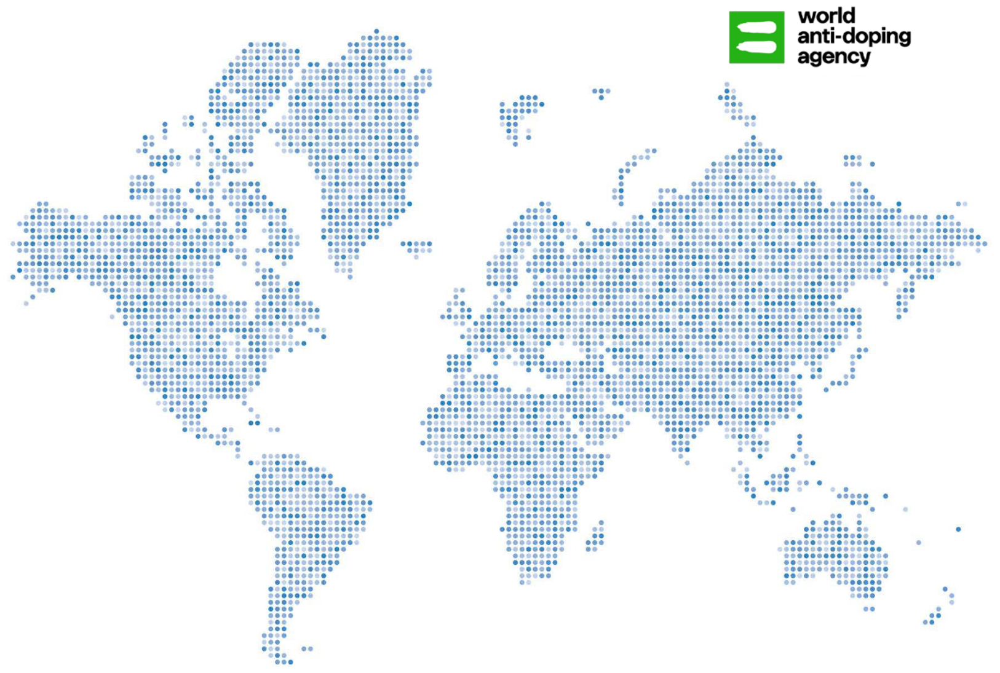

International Standards · ISTI
Edition 2026 · effective 1 April 2026 · superseded
Retrieved on 25 November 2026 from https://www.wada-ama.org/sites/default/files/2026-03/isti_2026_eng.pdf
Editions: 2027 (current) · 2026 · 2023 · 2021 · 2020 (March 2020) · 2019 · 2017 · 2015 · 2012 · 2009
p. 1
International Standard for Testing and Investigations

2026
p. 2
The World Anti-Doping Code International Standard for Testing and Investigations is a mandatory International Standard developed as part of the World Anti-Doping Program. It was developed in consultation with Signatories, public authorities, and other relevant stakeholders.
The International Standard for Testing was first adopted in 2003 and came into effect in January 2004. It was subsequently amended nine times, the first time effective January 2009; the second time effective January 2011; the third time it was renamed International Standard for Testing and Investigations (ISTI), effective January 2015; the fourth time effective January 2017; the fifth time effective March 2019; the sixth time effective March 2020, the seventh time effective January 2021, the eighth time effective as of 1 January 2023 and the ninth time effective April 2026. This version of the ISTI incorporates further revisions approved by the WADA Executive Committee in December 2025 and is effective as of 1 April 2026.
Published by:
World Anti-Doping Agency Stock Exchange Tower 800 Place Victoria (Suite 1700) PO Box 120 Montreal, Quebec Canada H4Z 1B7
www.wada-ama.org
Tel: +1 514 904 9232
Fax: +1 514 904 8650
E-mail: code@wada-ama.org
p. 3
p. 4
p. 5
p. 6
PART ONE: INTRODUCTION, CODE PROVISIONS, INTERNATIONAL STANDARD PROVISIONS AND DEFINITIONS
1.0 Introduction and Scope
The first purpose of the International Standard for Testing and Investigations is to plan for intelligent and effective Testing, both In-Competition and Out-of-Competition, and to maintain the integrity, identity and security of the Samples collected from the point the Athlete is notified of his/her selection for Testing, to the point the Samples are delivered to the Laboratory for analysis. To that end, the International Standard for Testing and Investigations (including its Annexes) establishes mandatory standards for Test distribution planning (including collection and use of Athlete whereabouts information), notification of Athletes, preparing for and conducting Sample collection, security/post-Test administration of Samples and documentation, and transport of Samples to Laboratories for analysis.
The second purpose of the International Standard for Testing and Investigations is to establish mandatory standards for the efficient and effective gathering, assessment and use of anti-doping intelligence and for the efficient and effective conduct of investigations into possible anti-doping rule violations.
The International Standard for Testing and Investigations is supported by Technical Documents, produced by WADA, to provide assistance to Anti-Doping Organizations in fulfilling their duties under the World Anti-Doping Program. Technical Documents are mandatory. The Results Management processes which were previously contained in the International Standard for Testing and Investigations are now reflected in the International Standard for Results Management.
Terms used in t his International Standard that are defined terms from the Code are italicized. Terms that are defined in this or another International Standard are underlined.
p. 7
2.0 Code Provisions
The following articles in the Code are directly relevant to the International Standard for Testing and Investigations; they can be obtained by referring to the Code itself:
- Article 2 Anti-Doping Rule Violations
- Article 5 Testing and Investigations
- Article 6 Analysis of Samples
- Article 8 Results Management: Right to a Fair Hearing and Notice of Hearing Decision
- Article 10 Sanctions on Individuals
- Article 12 Sanctions by Signatories Against Other Sporting Bodies
- Article 13 Results Management: Appeals
- Article 14 Confidentiality and Reporting
- Article 20 Additional Roles and Responsibilities of Signatories and WADA
p. 8
- Article 21 Additional Roles and Responsibilities of Athletes and Other Persons
- Article 23 Acceptance and Implementation
3.0 Definitions and Interpretation
3.1 Defined Terms from the Code that are used in the International Standard for Testing and Investigations
ADAMS: The Anti-Doping Administration and Management System is a Web-based database management tool for data entry, storage, sharing, and reporting designed to assist stakeholders and WADA in their anti-doping operations in conjunction with data protection legislation.
Adverse Analytical Finding: A report from a *WADA-*accredited laboratory or other WADA-approved laboratory that, consistent with the International Standard for Laboratories, establishes in a Sample the presence of a Prohibited Substance or its Metabolites or Markers or evidence of the Use of a Prohibited Method.
Adverse Passport Finding: A report identified as an Adverse Passport Finding as described in the applicable International Standards.
Anti-Doping Organization: WADA or a Signatory that is responsible for adopting rules for initiating, implementing or enforcing any part of the Doping Control process. This includes, for example, the International Olympic Committee, the International Paralympic Committee, other Major Event Organizations that conduct Testing at their Events, International Federations, and National Anti-Doping Organizations.
Athlete: Any Person who competes in sport at the international level (as defined by each International Federation) or the national level (as defined by each National Anti-Doping Organization). An Anti-Doping Organization has discretion to apply anti-doping rules to an Athlete who is neither an International-Level Athlete nor a National-Level Athlete,and thus to bring them within the definition of "Athlete". In relation to Athletes who are neither International-Level nor National-Level Athletes, an Anti-Doping Organization may elect to: conduct limited Testing or no Testing at all; analyze Samples for less than the full menu of Prohibited Substances; require limited or no whereabouts information; or not require advance TUEs. However, if an Article 2.1, 2.3 or 2.5 anti-doping rule violation is committed by any Athlete over whom an Anti-Doping Organization has elected to exercise its authority to test and who competes below the international or national level, then the Consequences set forth in the Code must be applied. For purposes of Article 2.8 and Article 2.9 and for purposes of anti- doping information and Education, any Person who participates in sport under the authority of any Signatory, government, or other sports organization accepting the Code is an Athlete.
[Comment to Athlete: Individuals who participate in sport may fall in one of five categories: 1) International-Level Athlete, 2) National-Level Athlete, 3) individuals who are not International or National-Level Athletes but over whom the International Federation or National Anti-Doping Organization has chosen to exercise authority, 4) Recreational Athlete, and 5) individuals over whom no International Federation or National Anti-Doping Organization has, or has chosen to, exercise authority. All International and National-Level Athletes are subject to the anti-doping rules of the Code, with the precise definitions of international and national-level sport to be set forth in the anti-doping rules of the International Federations and National Anti-Doping Organizations.]
p. 9
Athlete Biological Passport: The program and methods of gathering and collating data as described in the International Standard for Testing and Investigations and International Standard for Laboratories.
Athlete Support Personnel: Any coach, trainer, manager, agent, team staff, official, medical, paramedical personnel, parent or any other Person working with, treating or assisting an Athlete participating in or preparing for sports Competition.
Attempt: Purposely engaging in conduct that constitutes a substantial step in a course of conduct planned to culminate in the commission of an anti-doping rule violation. Provided, however, there shall be no anti-doping rule violation based solely on an Attempt to commit a violation if the Person renounces the Attempt prior to it being discovered by a third party not involved in the Attempt.
Atypical Finding: A report from a WADA-accredited laboratory or other WADA-approved laboratory which requires further investigation as provided by the International Standard for Laboratories or related Technical Documents prior to the determination of an Adverse Analytical Finding.
Atypical Passport Finding: A report described as an Atypical Passport Finding as described in the applicable International Standards.
CAS: The Court of Arbitration for Sport.
Code: The World Anti-Doping Code.
Competition: A single race, match, game or singular sport contest. For example, a basketball game or the finals of the Olympic 100-meter race in athletics. For stage races and other sport contests where prizes are awarded on a daily or other interim basis, the distinction between a Competition and an Event will be as provided in the rules of the applicable International Federation.
Consequences of Anti-Doping Rule Violations ("Consequences"): An Athlete's or other Person's violation of an anti-doping rule may result in one or more of the following: (a) Disqualification means the Athlete's results in a particular Competition or Event are invalidated, with all resulting Consequences including forfeiture of any medals, points and prizes; (b) Ineligibility means the Athlete or other Person is barred on account of an anti-doping rule violation for a specified period of time from participating in any Competition or other activity or funding as provided in Article 10.14; (c) Provisional Suspension means the Athlete or other Person is barred temporarily from participating in any Competition or activity prior to the final decision at a hearing conducted under Article 8; (d) Financial Consequences means a financial sanction imposed for an anti-doping rule violation or to recover costs associated with an anti-doping rule violation; and (e) Public Disclosure means the dissemination or distribution of information to the general public or Persons beyond those Persons entitled to earlier notification in accordance with Article 14. Teams in Team Sports may also be subject to Consequences as provided in Article 11.
Decision Limit: The value of the result for a threshold substance in a Sample, above which an Adverse Analytical Finding shall be reported, as defined in the International Standard for Laboratories.
p. 10
Delegated Third Party: Any Person to which an Anti-Doping Organization delegates any aspect of Doping Control or anti-doping Education programs including, but not limited to, third parties or other Anti-Doping Organizations that conduct Sample collection or other Doping Control services or anti-doping Educational programs for the Anti-Doping Organization, or individuals serving as independent contractors who perform Doping Control services for the Anti-Doping Organization (e.g., non-employee Doping Control officers or chaperones).This definition does not include CAS.
Doping Control: All steps and processes from test distribution planning through to ultimate disposition of any appeal and the enforcement of Consequences, including all steps and processes in between, including but not limited to, Testing, investigation, whereabouts, TUEs, Sample collection and handling, laboratory analysis, Results Management and investigations or proceedings relating to violations of Article 10.14 (Status During Ineligibility or Provisional Suspension).
Education: The process of learning to instill values and develop behaviors that foster and protect the spirit of sport, and to prevent intentional and unintentional doping.
Event: A series of individual Competitions conducted together under one ruling body (e.g., the Olympic Games, World Championships of an International Federation, or Pan American Games).
Event Venues: Those venues so designated by the ruling body for the Event.
In-Competition: The period commencing at 11:59 p.m. on the day before a Competition in which the Athlete is scheduled to participate through the end of such Competition and the Sample collection process related to such Competition. Provided, however, WADA may approve, for a particular sport, an alternative definition if an International Federation provides a compelling justification that a different definition is necessary for its sport; upon such approval by WADA, the alternative definition shall be followed by all Major Event Organizations for that particular sport.
[Comment to In-Competition: Having a universally accepted definition for In-Competition provides greater harmonization among Athletes across all sports, eliminates or reduces confusion among Athletes about the relevant timeframe for In-Competition Testing, avoids inadvertent Adverse Analytical Findings in between Competitions during an Event and assists in preventing any potential performance enhancement benefits from Substances prohibited Out-of-Competition being carried over to the Competition period.]
Independent Observer Program: A team of observers and/or auditors, under the supervision of WADA, who observe and provide guidance on the Doping Control process prior to or during certain Events and report on their observations as part of WADA's compliance monitoring program.
Ineligibility: See Consequences of Anti-Doping Rule Violations above.
International Event: An Event or Competition where the International Olympic Committee, the International Paralympic Committee, an International Federation, a Major Event Organization, or another international sport organization is the ruling body for the Event or appoints the technical officials for the Event.
p. 11
International-Level Athlete: Athletes who compete in sport at the international level, as defined by each International Federation, consistent with the International Standard for Testing and Investigations.
[Comment to International-Level Athlete: Consistent with the International Standard for Testing and Investigations, the International Federation is free to determine the criteria it will use to classify Athletes as International-Level Athletes, e.g., by ranking, by participation in particular International Events, by type of license, etc. However, it must publish those criteria in clear and concise form, so that Athletes are able to ascertain quickly and easily when they will become classified as International-Level Athletes. For example, if the criteria include participation in certain International Events, then the International Federation must publish a list of those International Events.]
International Standard: A standard adopted by WADA in support of the Code. Compliance with an International Standard (as opposed to another alternative standard, practice or procedure) shall be sufficient to conclude that the procedures addressed by the International Standard were performed properly. International Standards shall include any Technical Documents issued pursuant to the International Standard.
Major Event Organizations: The continental associations of National Olympic Committees and other international multisport organizations that function as the ruling body for any continental, regional or other International Event.
Marker: A compound, group of compounds or biological variable(s) that indicates the Use of a Prohibited Substance or Prohibited Method.
Minor: A natural Person who has not reached the age of eighteen years.
National Anti-Doping Organization: The entity(ies) designated by each country as possessing the primary authority and responsibility to adopt and implement anti-doping rules, direct the collection of Samples, manage test results and conduct Results Management at the national level. If this designation has not been made by the competent public authority(ies), the entity shall be the country's National Olympic Committee or its designee.
National Event: A sport Event or Competition involving International- or National-Level Athletes that is not an International Event.
National-Level Athlete: Athletes who compete in sport at the national level, as defined by each National Anti-Doping Organization, consistent with the International Standard for Testing and Investigations.
National Olympic Committee: The organization recognized by the International Olympic Committee. The term National Olympic Committee shall also include the National Sport Confederation in those countries where the National Sport Confederation assumes typical National Olympic Committee responsibilities in the anti-doping area.
Out-of-Competition: Any period which is not In-Competition.
Person: A natural Person or an organization or other entity.
Prohibited Method: Any method so described on the Prohibited List.
p. 12
Prohibited Substance: Any substance, or class of substances, so described on the Prohibited List.
Protected Person: An Athlete or other natural Person who at the time of the anti-doping rule violation: (i) has not reached the age of sixteen (16) years; (ii) has not reached the age of eighteen (18) years and is not included in any Registered Testing Pool and has never competed in any International Event in an open category; or (iii) for reasons other than age, has been determined to lack legal capacity under applicable national legislation.
[Comment to Protected Persons: The Code treats Protected Persons differently than other Athletes or Persons in certain circumstances based on the understanding that, below a certain age or intellectual capacity, an Athlete or other Person may not possess the mental capacity to understand and appreciate the prohibitions against conduct contained in the Code. This would include, for example, a Paralympic Athlete with a documented lack of legal capacity due to an intellectual impairment. The term "open category" is meant to exclude competition that is limited to junior or age group categories.]
Provisional Suspension: See Consequences of Anti-Doping Rule Violations above.
Recreational Athlete: A natural Person who is so defined by the relevant National Anti-Doping Organization; provided, however, the term shall not include any Person who, within the five (5) years prior to committing any anti-doping rule violation, has been an International-Level Athlete (as defined by each International Federation consistent with the International Standard for Testing and Investigations) or National-Level Athlete (as defined by each National Anti-Doping Organization consistent with the International Standard for Testing and Investigations), has represented any country in an International Event in an open category or has been included within any Registered Testing Pool or other whereabouts information pool maintained by any International Federation or National Anti-Doping Organization.
[Comment to Recreational Athlete: The term "open category" is meant to exclude competition that is limited to junior or age group categories.]
Registered Testing Pool: The pool of highest-priority Athletes established separately at the international level by International Federations and at the national level by National Anti-Doping Organizations, who are subject to focused In-Competition and Out-of-Competition Testing as part of that International Federation's or National Anti-Doping Organization's test distribution plan and therefore are required to provide whereabouts information as provided in Article 5.5 and the International Standard for Testing and Investigations.
Results Management: The process encompassing the timeframe between notification as per Article 5 of the International Standard for Results Management, or in certain cases (e.g., Atypical Finding, Athlete Biological Passport, whereabouts failure), such pre-notification steps expressly provided for in Article 5 of the International Standard for Results Management, through the charge until the final resolution of the matter, including the end of the hearing process at first instance or on appeal (if an appeal was lodged).
Sample or Specimen: Any biological material collected for the purposes of Doping Control.
[Comment to Sample or Specimen: It has sometimes been claimed that the collection of blood Samples violates the tenets of certain religious or cultural groups. It has been determined that there is no basis for any such claim.]
p. 13
Signatories: Those entities accepting the Code and agreeing to implement the Code, as provided in Article 23.
Substantial Assistance: For purposes of Article 10.7.1, a Person providing Substantial Assistance must: (1) fully disclose in a signed written statement or recorded interview all information he or she possesses in relation to anti-doping rule violations or other proceeding described in Article 10.7.1.1 and (2) fully cooperate with the investigation and adjudication of any case or matter related to that information, including, for example, presenting testimony at a hearing if requested to do so by an Anti-Doping Organization or hearing panel. Further, the information provided must be credible and must comprise an important part of any case or proceeding which is initiated or, if no case or proceeding is initiated, must have provided a sufficient basis on which a case or proceeding could have been brought.
Tampering: Intentional conduct which subverts the Doping Control process but which would not otherwise be included in the definition of Prohibited Methods. Tampering shall include, without limitation, offering or accepting a bribe to perform or fail to perform an act, preventing the collection of a Sample, affecting or making impossible the analysis of a Sample, falsifying documents submitted to an Anti-Doping Organization or TUE committee or hearing panel, procuring false testimony from witnesses, committing any other fraudulent act upon the Anti-Doping Organization or hearing body to affect Results Management or the imposition of Consequences, and any other similar intentional interference or Attempted interference with any aspect of Doping Control.
[Comment to Tampering: For example, this Article would prohibit altering identification numbers on a Doping Control form during Testing, breaking the B bottle at the time of B Sample analysis, altering a Sample by the addition of a foreign substance, or intimidating or attempting to intimidate a potential witness or a witness who has provided testimony or information in the Doping Control process. Tampering includes misconduct which occurs during the Results Management and hearing process. See Code Article 10.9.3.3. However, actions taken as part of a Person's legitimate defense to an anti-doping rule violation charge shall not be considered Tampering. Offensive conduct towards a Doping Control official or other Person involved in Doping Control which does not otherwise constitute Tampering shall be addressed in the disciplinary rules of sport organizations.]
Target Testing: Selection of specific Athletes for Testing based on criteria set forth in the International Standard for Testing and Investigations.
Team Sport: A sport in which the substitution of players is permitted during a Competition.
Technical Document: A document adopted and published by WADA from time to time containing mandatory technical requirements on specific anti-doping topics as set forth in an International Standard.
Testing: The parts of the Doping Control process involving test distribution planning, Sample collection, Sample handling, and Sample transport to the laboratory.
WADA: The World Anti-Doping Agency.
3.2 Defined Terms from the International Standard for Laboratories:
ABP Laboratory: A laboratory not otherwise accredited by WADA, which is approved by WADA to apply Analytical Methods and processes in support of the hematological module of the ABP program and in accordance with the criteria for approval of non-accredited laboratories for the ABP.
p. 14
Analytical Testing: The parts of the Doping Control process performed at the Laboratory, which include Sample handling, analysis and reporting of results.
Analytical Testing Procedure: A Fit-for-Purpose procedure, as demonstrated through method validation, and used to detect, identify and/or quantify Analytes in a Sample for Doping Control purposes in accordance with the ISL and relevant Technical Document(s), Technical Letter(s) or Laboratory Guidelines. An Analytical Testing Procedure is also referred to or known as an Analytical Method or Test Method.
Athlete Passport Management Unit (APMU): A unit composed of a Person or Persons that is responsible for the timely management of Athlete Biological Passports in ADAMS on behalf of the Passport Custodian.
Confirmation Procedure (CP): An Analytical Testing Procedure that has the purpose of confirming the presence and/or, when applicable, confirming the concentration/ratio/score and/or establishing the origin (exogenous or endogenous) of one or more specific Prohibited Substances, Metabolite(s) of a Prohibited Substance, or Marker(s) of the Use of a Prohibited Substance or Prohibited Method in a Sample.
Further Analysis: Further Analysis, as this term is used in the ISL, occurs when a Laboratory conducts additional analysis on an "A" Sample or a "B" Sample after an analytical result for that "A" Sample or that "B" Sample has been reported by the Laboratory.
[Comment: There is no limitation on a Laboratory's authority to conduct repeat or confirmation analysis, or to analyze a Sample with additional Analytical Methods, or to perform any other type of additional analysis on an "A" Sample or "B" Sample prior to reporting an analytical result on that Sample. That is not considered Further Analysis.
If a Laboratory is to conduct additional analysis on an "A" Sample or "B" Sample after an analytical result for that Sample has been reported (for example: additional Sample analysis to detect EPO, or GC/C/IRMS analysis, or analysis in connection with the Athlete Biological Passport or additional analysis on a stored Sample) it may do so after receiving approval from the Testing Authority or Results Management Authority (if different) or WADA. However, after an Athlete has been charged with a Code Article 2.1 anti-doping rule violation based on the presence of a Prohibited Substance, Metabolite(s) of a Prohibited Substance, or Marker(s) of the Use of a Prohibited Substance or Prohibited Method in a Sample, then Further Analysis on that Sample may only be performed with the consent of the Athlete or approval from a hearing body (see Code Article 6.5).
Further Analysis may be performed by the same Laboratory that did the original Analytical Testing, or by a different Laboratory or other WADA-approved laboratory, at the direction of the Testing Authority or Results Management Authority (if different) or WADA. Any other Anti-Doping Organization that wishes to conduct Further Analysis on a stored Sample may do so with the permission of the Testing Authority or Results Management Authority (if different) or WADA and shall be responsible for any follow-up Results Management. Any Sample storage or Further Analysis initiated by WADA or another Anti-Doping Organization shall be at WADA's or that Anti-Doping Organization's expense.]
p. 15
Laboratory: A WADA-accredited laboratory applying Test Methods and processes to provide evidentiary data for the detection and/or identification of Prohibited Substances or Prohibited Methods on the Prohibited List and, if applicable, quantification of a Threshold Substance in Samples of urine and other biological matrices in the context of Doping Control activities.
3.3 Defined Terms from the International Standard for Results Management:
Adaptive Model: A mathematical model designed to identify unusual longitudinal results from Athletes. The model calculates the probability of a longitudinal profile of Marker values, assuming that the Athlete has a normal physiological condition.
Failure to Comply: A term used to describe anti-doping rule violations under Code Articles 2.3 and/or 2.5.
Filing Failure: A failure by the Athlete (or by a third party to whom the Athlete has delegated the task) to make an accurate and complete Whereabouts Filing that enables the Athlete to be located for Testing at the times and locations set out in the Whereabouts Filing or to update that Whereabouts Filing where necessary to ensure that it remains accurate and complete, all in accordance with Article 4.8 of the International Standard for Testing and Investigations and Annex B of the International Standard for Results Management.
Missed Test: A failure by the Athlete to be available for Testing at the location and time specified in the 60-minute time slot identified in their Whereabouts Filing for the day in question, in accordance with Article 4.8 of the International Standard for Testing and Investigations and Annex B of the International Standard for Results Management.
Passport Custodian: The Anti-Doping Organization responsible for Results Management of that Athlete's Passport and for sharing any relevant information associated to that Athlete's Passport with other Anti-Doping Organization(s).
Results Management Authority: The Anti-Doping Organization responsible for conducting Results Management in a given case.
Whereabouts Failure: A Filing Failure or a Missed Test.
3.4 Defined Terms from the International Standard for the Protection of Privacy and Personal Information:
Processing (and its cognates, Process and Processed): Collecting, accessing, retaining, storing, disclosing, transferring, transmitting, amending, deleting or otherwise making use of Personal Information.
3.5 Defined Terms specific to the International Standard for Testing and Investigations:
Blood Collection Officer (or BCO): An official who is qualified and has been authorized by the Sample Collection Authority to collect a blood Sample from an Athlete.
Chain of Custody: The sequence of individuals or organizations who have responsibility for the custody of a Sample from the provision of the Sample until the Sample has been delivered to the Laboratory for analysis.
p. 16
Chaperone: An official who is suitably trained and authorized by the Sample Collection Authority to carry out specific duties including one or more of the following (at the election of the Sample Collection Authority); notification of the Athlete selected for Sample collection; accompanying and observing the Athlete until arrival at the Doping Control Station; accompanying and/or observing Athletes who are present in the Doping Control Station; and/or witnessing and verifying the provision of the Sample where the training specifically qualifies them to do so.
*Code Article 2.4 Whereabouts Requirements:* The whereabouts requirements set out in Article 4.8, which apply to Athletes who are included in the Registered Testing Pool of an International Federation or a National Anti-Doping Organization.
Doping Control Coordinator: An Anti-Doping Organization or a Delegated Third Party that coordinates any aspect of Doping Control on behalf of an Anti-Doping Organization. The Anti-Doping Organization always remains ultimately responsible under the Code for compliance with the requirements of the International Standard for Testing and Investigations, Therapeutic Use Exemptions, Protection of Privacy and Personal Information, and Results Management.
Doping Control Officer (or DCO): An official who has been trained and authorized by the Sample Collection Authority to carry out the responsibilities given to DCOs in the International Standard for Testing and Investigations.
Doping Control Station: The location where the Sample Collection Session will be conducted in accordance with Article 6.3.2.
In-Competition Date: As described in Article 4.8.8.4.
No Advance Notice Testing: Sample collection that takes place with no advance warning to the Athlete and where the Athlete is continuously chaperoned from the moment of notification through Sample provision.
Random Selection: Selection of Athletes for Testing which is not Target Testing.
Risk Assessment: The assessment of risk of doping in a sport or sports discipline conducted by an Anti-Doping Organization in accordance with Article 4.2.
Sample Collection Authority: The organization that is responsible for the collection of Samples in compliance with the requirements of the International Standard for Testing and Investigations, whether (1) the Testing Authority itself; or (2) a Delegated Third Party to whom the authority to conduct Testing has been granted or sub-contracted. The Testing Authority always remains ultimately responsible under the Code for compliance with the requirements of the International Standard for Testing and Investigations relating to collection of Samples.
Sample Collection Equipment: A and B bottles, kits or containers, collection vessels, tubes or other apparatus used to collect, hold or store the Sample at any time during and after the Sample Collection Session that shall meet the requirements of Article 6.3.4.
Sample Collection Personnel: A collective term for qualified officials authorized by the Sample Collection Authority to carry out or assist with duties during the Sample Collection Session.
p. 17
Sample Collection Session: All of the sequential activities that directly involve the Athlete from the point that initial contact is made until the Athlete leaves the Doping Control Station after having provided their Sample(s).
Suitable Specific Gravity for Analysis: For Samples with a minimum volume of 90 mL and less than 150 mL, specific gravity measured at 1.005 or higher with a refractometer, or 1.010 or higher with lab sticks. For Samples with a volume of 150 mL and above, specific gravity measured at 1.003 or higher with a refractometer only.
Suitable Volume of Urine for Analysis: A minimum of 90 mL, whether the Laboratory will be analyzing the Sample for all or only some Prohibited Substances or Prohibited Methods.
Tamper Evident: Refers to having one or more indicators or barriers to entry incorporated into or, if applicable, included with the Sample Collection Equipment, which, if breached or missing or otherwise compromised, can provide visible evidence that Tampering or Attempted Tampering of Sample Collection Equipment has occurred.
Team Activity/Activities: Sporting activities carried out by Athletes on a collective basis as part of a team (e.g., training, travelling, tactical sessions) or under the supervision of the team (e.g., treatment by a team doctor).
Technical Document for Sport Specific Analysis (TDSSA): The Technical Document which establishes minimum levels of analysis that Anti-Doping Organizations must apply to sports and sport disciplines for certain Prohibited Substances and/or Prohibited Methods, which are most likely to be abused in particular sports and sport disciplines.
Test(s): Any combination of Sample(s) collected (and analyzed) from a single Athlete in a single Sample Collection Session.
Test Distribution Plan: A document written by an Anti-Doping Organization that plans Testing on Athletes, in accordance with the requirements of Article 4.
Testing Authority: The Anti-Doping Organization that authorizesTesting on Athletes it has authority over. It may authorize a Delegated Third Party to conduct Testing pursuant to the authority of and in accordance with the rules of the Anti-Doping Organization. Such authorization shall be documented. The Anti-Doping Organization authorizing Testing remains the Testing Authority and ultimately responsible under the Code to ensure the Delegated Third Party conducting the Testing does so in compliance with the requirements of the International Standard for Testing and Investigations.
Unsuccessful Attempt Report: A detailed report of an unsuccessful attempt to collect a Sample from an Athlete in a Registered Testing Pool or Testing pool setting out the date of the attempt, the location visited, the exact arrival and departure times at the location, the steps taken at the location to try to find the Athlete (including details of any contact made with third parties), and any other relevant details about the attempt.
Whereabouts Filing: Information provided by or on behalf of an Athlete in a Registered Testing Pool that sets out the Athlete's whereabouts during the current and/or following quarter, in accordance with Article 4.8.
p. 18
3.6.1 The official text of the International Standard for Testing and Investigations shall be published in English and French. In the event of any conflict between the English and French versions, the English version shall prevail.
3.6.2 Like the Code, the International Standard for Testing and Investigations has been drafted giving consideration to the principles of proportionality, human rights, and other applicable legal principles. It shall be interpreted and applied in that light.
3.6.3 The comments annotating various provisions of the International Standard for Testing and Investigations shall be used to guide its interpretation.
3.6.4 Unless otherwise specified, references to Sections and Articles are references to Sections and Articles of the International Standard for Testing and Investigations.
3.6.5 Where the term "days" is used in the International Standard for Testing and Investigations, it shall mean calendar days unless otherwise specified.
3.6.6 The Annexes to the International Standard for Testing and Investigations have the same mandatory status as the rest of the International Standard.
p. 19
PART TWO: STANDARDS FOR TESTING
4.0 Planning Effective Testing
4.1 Objective
4.1.1 Each Anti-Doping Organization is required to plan and implement intelligent Testing on Athletes over whom it has authority which is proportionate to the risk of doping, and that is effective to detect and to deter such practices. The objective of Article 4 is to set out the steps that are necessary to develop a Risk Assessment and produce a Test Distribution Plan that satisfies this requirement. Code Article 23.3 requires Signatories to devote sufficient resources in order to implement Testing programs in all areas that are compliant with the Code and International Standards.
4.1.2 The Anti-Doping Organization shall ensure that Athlete Support Personnel and any other Persons with a conflict of interest are not involved in test distribution planning for their Athletes or in the process of selection of Athletes for Testing.
4.1.3 The Anti-Doping Organization shall document its Risk Assessment and Test Distribution Plan and shall provide that Risk Assessment and Test Distribution Plan to WADA where requested. The Anti-Doping Organization must be able to demonstrate to WADA's satisfaction that it has made a proper assessment of the relevant risks and has developed and/or implemented an appropriate Test Distribution Plan based on the results of that assessment.
4.1.4 The Anti-Doping Organization shall monitor, evaluate and update its Risk Assessment and Test Distribution Plan during the year/cycle in light of changing circumstances and implementing the Test Distribution Plan. It shall adapt its Test Distribution Plan to reflect new information gathered and intelligence developed by the Anti-Doping Organization and take into account Testing conducted by other Anti-Doping Organizations.
4.2 Risk Assessment
4.2.1 The starting point of the Test Distribution Plan shall be a considered Risk Assessment, conducted in good faith. This assessment shall take into account (at a minimum) the following information:
a) The physical and other demands of the relevant sport(s) (and/or discipline(s) within the sport(s)), considering in particular the physiological requirements of the sport(s)/sport discipline(s);
b) Which Prohibited Substances and/or Prohibited Methods an Athlete would consider most likely to enhance performance in the relevant sport(s)/sport discipline(s);
c) The rewards and/or potential incentives for doping available at the different levels of the sport(s)/sport discipline(s) and for the nations participating in such sport(s)/sport discipline(s);
d) The history of doping in the sport(s)/sport discipline(s), nation(s) and/or Event;
p. 20
[Comment to 4.2.1 (d): Unless there has been an effective Testing program in a sport, encompassing both In-Competition andOut-of-Competition Testing, a history of no or few Adverse Analytical Findings says little, if anything, about the risk of doping in that sport.]
e) Available statistics and research findings on doping trends (e.g., anti-doping Testing figures and anti-doping rule violation reports published by WADA; peer-reviewed articles);
f) Information received/intelligence developed on possible doping practices in the sport (e.g., Laboratory and APMU recommendations; Sample Collection Personnel reports; Athlete testimony; information from criminal investigations; and/or other information received/intelligence developed in accordance with WADA's Guidelines for Information Gathering and Intelligence Sharing) in accordance with Article 11;
g) The outcomes of previous test distribution planning cycles including past Testing strategies;
h) At what points during an Athlete's career in the sport/discipline an Athlete would be most likely to benefit from Prohibited Substances and/or Prohibited Methods; and
i) Given the structure of the season for the sport/discipline in question (including standard Competition schedules and training patterns), at what time(s) during the year/cycle an Athlete would be most likely to benefit from Prohibited Substances and/or Prohibited Methods.
4.2.2 In developing its Test Distribution Plan, the Anti-Doping Organization should consider in good faith any Risk Assessment for the sport or discipline in question carried out by another Anti-Doping Organization with overlapping Testing Authority. However, an International Federation is not bound by a National Anti-Doping Organization's assessment of the risks of doping in a particular sport or discipline, and a National Anti-Doping Organization is not bound by an International Federation's assessment of the risks of doping in a particular sport or discipline.
4.2.3 In developing its Test Distribution Plan, the Anti-Doping Organization shall incorporate the requirements of the TDSSA.
4.3 Defining International-Level and National-Level Athletes
4.3.1 Code Article 5.2 gives different Anti-Doping Organizations authority to conduct Testing on potentially very large pools of Athletes. However, in recognition of the finite resources of Anti-Doping Organizations, the Code definition of Athlete allows National Anti-Doping Organizations to limit the number of Athletes who will be subject to their national anti-doping programs (in particular, Testing) to those who compete at the highest national levels (i.e., National-Level Athletes, as defined by the National Anti-Doping Organization). It also allows International Federations to focus their anti-doping programs (including Testing) on those who compete regularly at the international level (i.e., International-Level Athletes, as defined by the International Federation).
[Comment to 4.3.1: Nothing prevents an International Federation from Testing an Athlete under its authority who is not an International-Level Athlete, if it sees fit, e.g., where they are competing in an International Event. Furthermore, as set out in the Code definition of Athlete, a National Anti-Doping Organization may decide to extend its anti-doping program (including Testing) to Athletes who compete below national level. However, the main focus of an International Federation's Test Distribution Plan should be International-Level Athletes, and the main focus of a National Anti-Doping Organization's Test Distribution Plan should be National-Level Athletes and above.]
p. 21
4.3.2 Therefore, once the Risk Assessment and the Test Distribution Plan described in Article 4.2 are completed, the next step is to determine an appropriate definition of International-Level Athlete (for an International Federation), or National-Level Athlete (for a National Anti-Doping Organization) who are going to be subject to Testing by an Anti-Doping Organization:
a) An International Federation is free to determine the criteria it will use to classify Athletes as International-Level Athletes, e.g., by ranking, by participation in particular International Events, etc. It should make that determination in good faith, in accordance with its responsibility to protect the integrity of the sport at the international level (the showcase of the sport to the public), by fixing a definition that shall, at a minimum (and in accordance with the Risk Assessment undertaken in connection with the relevant sport/sports discipline), include those Athletes who compete regularly at an international level and/or who compete at a standard at which world records may be set.
[Comment to 4.3.2 (a): The Code requires each International Federation to publish in clear and concise form the criteria it uses to classify Athletes as International-Level Athletes, so that it is clear to everyone where the line is drawn. For example, if the criteria include competing in certain International Events, then the International Federation shall publish a list of those International Events.]
b) Similarly, a National Anti-Doping Organization is free to determine the criteria it will use to classify Athletes as National-Level Athletes. Again, it should make that determination in good faith, in accordance with its responsibility to protect the integrity of the sport at the national level (the source of national pride in different sports, and the steppingstone to international Competition, including representation of the nation in International Events or Competitions). Consequently, the definition shall at a minimum (and in accordance with the Risk Assessment undertaken in connection with the relevant sport/sports discipline) include those who compete at the highest levels of national Competition in the sport in question (i.e., in national championships or other Events that determine or count towards determining who are the best in the country in the category/discipline in question, and/or who may be selected to represent the country in International Events or Competitions). It shall also include those nationals of its country who generally or often compete at an international level and/or in International Events or Competitions (rather than at the national level) but who are not classified as International-Level Athletes by their International Federation.
4.4 Prioritizing Between Sports and/or Disciplines
4.4.1 Next, the Anti-Doping Organization shall consider whether there are any factors warranting allocation of Testing resources to one sport or discipline or nation (as applicable) in priority to others and shall take into account without limitation their p. 22 calendar of Events. This means having assessed the relative risks of doping:
a) In the case of an International Federation, allocating Testing between the different disciplines and nations, within its sport.
b) In the case of a National Anti-Doping Organization, allocating Testing between the different sports as well as any national anti-doping policy imperatives that may lead it to prioritize certain sports over others.
[Comment to 4.4.1 (b): National Anti-Doping Organizations will have varying national policy requirements and priorities. For example, one National Anti- Doping Organization may have legitimate reasons to prioritize (some or all) Olympic sports while another may have legitimate reasons, because of different characteristics of that sporting nation, to prioritize for example certain other 'national' sports. These policy imperatives are a relevant consideration in the National Anti-Doping Organization's test distribution planning, alongside its assessment of the relative risks of doping in the various sports played within its national jurisdiction. They may lead, for example, to a National Anti-Doping Organization deciding, in its Test Distribution Plan, for a particular period, (1)to allocate Testing to some sports within its jurisdiction but not others; and (2) to prioritize certain sports over others due not to a greater risk of doping in those sports but to a greater national interest in ensuring the integrity of those sports.]
c) In the case of a Major Event Organization, allocating Testing between the different sports and/or disciplines involved in its Event.
d) Another factor relevant to the allocation of Testing resources within the Test Distribution Plan will be the number of Athletes involved at the relevant level in the sport(s) and/or discipline(s) and/or nation(s) in question. Where the risk of doping is assessed to be equal between two different sports or disciplines or nations, more resources should be devoted to the sport or discipline or nation involving the larger number of Athletes.
4.5 Prioritizing Between Different Athletes
4.5.1 Once the International-Level Athletes and National-Level Athletes have been defined (see Article 4.3), and the priority sports/disciplines/nations have been established (see Article 4.4), an intelligent Test Distribution Plan uses Target Testing to focus Testing resources where they are most needed within the overall pool of Athletes. Target Testing shall therefore be made a priority, i.e., a significant amount of the Testing undertaken as part of an Anti-Doping Organization's Test Distribution Plan shall be Target Testing of Athletes within its overall pool.
[Comment to 4.5.1: Target Testing is a priority because random Testing, or even weighted random Testing, does not ensure that all the appropriate Athletes will be tested enough. The Code does not impose any reasonable suspicion or probable cause requirement for Target Testing. However, Target Testing should not be used for any purpose other than legitimate Doping Control.]
4.5.2 Anti-Doping Organizations shall consider conducting Target Testing on the following categories of Athletes:
p. 23
a) For International Federations, Athletes (especially from its priority disciplines or nations) who compete regularly at the highest level of international Competition (e.g., candidates for Olympic, Paralympic or World Championship medals), as determined by rankings or other suitable criteria.
b) For National Anti-Doping Organizations, the following Athletes from its priority sports:
(i) Athletes who are part of national teams in major Events (e.g., Olympic Paralympic, World Championship and other multi-sport Events) or other sports of high national priority (or who might be selected for such teams);
(ii) Athletes who train independently but perform at major Events (e.g., Olympic Games, Paralympic Games, World Championship and other multi-sport Events) and may be selected for such Events;
(iii) Athletes in receipt of public funding;
(iv) National Level Athletes who reside, train or compete abroad;
[Comment to 4.5.2 (b) (iv): Even if National Level Athletes are not residing or training within the National Anti-Doping Organization's country, it is still that National Anti-Doping Organization's responsibility to ensure those Athletes are subject to testing abroad. The fact that an Athlete resides or frequently trains abroad is not a valid reason not to test them.]
(v) National Level Athletes who are nationals of other countries but who are present (whether residing, training, competing or otherwise) within the National Anti-Doping Organization's country; and
(vi) In collaboration with International Federations, International-Level Athletes.
c) For all Anti-Doping Organizations with Testing Authority:
(i) Athletes serving a period of Ineligibility or a Provisional Suspension; and
(ii) Athletes who were high priority for Testing before they retired from the sport and who now wish to return from retirement to active participation in the sport.
[Comment to 4.5.2: Coordination between the International Federations, National Anti-Doping Organizations and other Anti-Doping Organizations shall occur in accordance with Article 4.9.]
4.5.3 Other individual factors relevant to determining which Athletes shall be the subject of Target Testing shall also be considered by the Anti-Doping Organization. Relevant factors may include (but are not limited to):
a) Prior anti-doping rule violations, Test history, including any abnormal biological parameters (blood parameters, steroid profiles, as recommended by an APMU, etc.);
p. 24
b) Sport performance history, performance pattern, and/or high performance without a commensurate Test record;
c) Repeated failure to meet whereabouts requirements;
d) Suspicious whereabouts patterns (e.g., last-minute updates of whereabouts information);
e) Moving to or training in a remote location;
f) Withdrawal or absence from expected Competition(s);
g) Association with a third party (such as a team-mate, coach or doctor) with a history of involvement in doping;
h) Injury;
i) Age/stage of career (e.g., move from junior to senior level, nearing end of contract, approaching retirement);
j) Financial incentives for improved performance, such as prize money or sponsorship opportunities; and/or
k) Reliable information from a third party, or intelligence developed by or shared with the Anti-Doping Organization in accordance with Article 11.
4.5.4 Testing which is not Target Testing shall be determined by Random Selection and should be conducted in accordance with the selection options in the Guidelines for Implementing an Effective Testing Program. Random Selection shall be conducted using a documented system for such selection. Random Selection may be either weighted (where Athletes are ranked using pre-determined criteria in order to increase or decrease the chances of selection) or completely random (where no pre-determined criteria are considered, and Athletes are chosen arbitrarily from a list or pool of Athlete names). Random Selection that is weighted shall be prioritized and be conducted according to defined criteria which may take into account the factors listed in Article 4.5.2 and 4.5.3 (as applicable) in order to ensure that a greater percentage of 'at risk' Athletes are selected.
[Comment to 4.5.4: In addition to Target Testing, Testing by Random Selection can play an important deterrent role, as well as helping to protect the integrity of an Event.]
4.5.5 For the avoidance of doubt, notwithstanding the development of criteria for selection of Athletes for Testing, and in particular for Target Testing of Athletes, as well as the fact that as a general rule Testing shall take place between 6 a.m. and 11 p.m. unless (i), the Athlete stipulates a 60-minute timeslot from 5 a.m. or, (ii) valid grounds exist for Testing overnight (i.e., between 11 p.m. and 6 a.m.), the fundamental principle remains (as set out in Code Article 5.2) that an Athlete may be required to provide a Sample at any time and at any place by any Anti-Doping Organization with authority to conduct Testing, whether or not the selection of the Athlete for Testing is in accordance with such criteria. Accordingly, an Athlete may not refuse to submit to Sample collection on the basis that such Testing is not provided for in the Anti-Doping Organization's Test
p. 25
Distribution Plan and/or is not being conducted between 6 a.m. and 11 p.m., and/or that the Athlete does not meet the relevant selection criteria for Testing or otherwise should not have been selected for Testing.
4.6 Prioritizing Between Different Types of Testing and Samples
4.6.1 Based on the Risk Assessment and prioritization process described in Articles 4.2 to 4.5, the Anti-Doping Organization must determine to what extent each of the following types of Testing is required in order to detect and deter doping practices within the relevant sport(s), discipline(s) and/or nation(s), intelligently and effectively:
a) In-Competition Testing and Out-of-Competition Testing;
(i) In sports and/or disciplines that are assessed as having a high risk of doping during Out-of-Competition periods, Out-of-Competition Testing shall be made a priority, and a significant portion of the available Testing shall be conducted Out-of-Competition. However, a material amount of In-Competition Testing shall still take place.
(ii) In sports and/or disciplines that are assessed as having a low risk of doping during Out-of-Competition periods (i.e., where it can be clearly shown that doping while Out-of-Competition is unlikely to enhance performance or provide other illicit advantages), In-Competition Testing shall be made a priority, and a significant portion of the available Testing shall be conducted In-Competition. However, some Out-of-Competition Testing shall still take place, proportionate to the risk of Out-of-Competition doping in such sport/discipline. Very exceptionally, i.e., in the small number of sports and/or disciplines where it is determined in good faith that there is no material risk of doping during Out-of-Competition periods, there may be no Out-ofCompetition Testing. In these circumstances, the International Federation shall apply to WADA to seek an exemption from Out-of-Competition Testing in accordance with any protocol issued by WADA.
b) Testing of urine;
c) Testing of blood;
d) Testing involving longitudinal profiling, i.e., the Athlete Biological Passport program; and
e) Testing of dried blood spots.
[Comment to 4.6.1 (c), (d) and (e): The requirements for blood in this International Standard for Testing and Investigations apply, without limitation to Samples collected by venipuncture in accordance with Annex D - Collection of Venous Blood Samples and Annex I - Collection, Storage and Transport of Blood Athlete Biological Passport Samples and by capillary blood sampling in accordance with Annex J - Collection, Storage and Transport of Dried Blood Spot Samples; however, different requirements apply depending on the Sample Collection Equipment and the requested analyses e.g., specific requirements apply for dried blood spot Samples, which are collected and allowed to dry on an absorbent Sample support (i.e., dried blood spot cellulose card or other equipment made of another material.]
p. 26
4.7 Sample Analysis, Retention Strategy and Further Analysis
4.7.1 Anti-Doping Organizations shall ask Laboratories to analyze Samples for the standard analysis menu based on whether the Sample was collected In-Competition or Out-ofCompetition. Anti-Doping Organizations may also consider undertaking more extensive Sample analysis for Prohibited Substances or Prohibited Methods beyond those contained (or the levels required) within the TDSSA based on the risk of the sport/discipline/country or any intelligence that the Anti-Doping Organization may receive.
4.7.2 An Anti-Doping Organization may apply to WADA for flexibility in the implementation of the minimum levels of analysis specified for Prohibited Substances or Prohibited Methods as outlined in the TDSSA.
4.7.3 The Anti-Doping Organization shall develop a written strategy for retention of Samples and the documentation relating to the collection of such Samples so as to enable the Further Analysis of such Samples at a later date in accordance with Code Articles 6.5 and 6.6. Such strategy shall comply with the requirements of the International Standard for Laboratories and the International Standard for the Protection of Privacy and Personal Information, and shall take into account the purposes of analysis of Samples set out in Code Article 6.2, as well as (without limitation) the following elements:
a) Laboratory and APMU recommendations;
b) The possible need for retroactive analysis in connection with the Athlete Biological Passport program;
c) New detection methods to be introduced in the future relevant to the Athlete, sport and/or discipline;
d) Samples collected from Athletes meeting some or all of the criteria set out at Article 4.5;
e) Any other information made available to the Anti-Doping Organization justifying long-term storage or Further Analysis of Samples at the Anti-Doping Organization's discretion.
4.8 Collecting Whereabouts Information
4.8.1 Whereabouts information is not an end in itself, but rather a means to an end, namely the efficient and effective conduct of No Advance Notice Testing. Therefore, where an Anti-Doping Organization has determined that it needs to conduct Testing (including Out-ofCompetition Testing) on particular Athletes, it shall then consider how much information it needs about the whereabouts of those Athletes in order to conduct that Testing effectively and with no advance notice. The Anti-Doping Organization must collect all of the whereabouts information that it needs to conduct the Testing identified in its Test Distribution Plan effectively and efficiently. In addition, the amount of whereabouts information requested shall be proportional to the whereabouts pool and the number of times the Anti-Doping Organization intends to test the Athlete.
p. 27
4.8.2 In accordance with Code Articles 5.5 and 14.5, Anti-Doping Organizations may collect whereabouts information and shall use ADAMS to conduct effective Doping Control. As a result, such information shall be automatically available through ADAMS to WADA and other relevant Anti-Doping Organizations with overlapping Testing Authority. This information shall:
a) Be maintained in strict confidence at all times;
b) Be used for purposes of planning, coordinating or conducting Doping Control;
c) Be relevant to the Athlete Biological Passport or other analytical results;
d) Support an investigation into a potential anti-doping rule violation; and/or
e) Support proceedings alleging an anti-doping rule violation.
4.8.3 Where an Anti-Doping Organization has determined that it needs to conduct Out-ofCompetition Testing on particular Athletes following its Risk Assessment (in accordance with Article 4.2) and the prioritization steps (in Articles 4.3 to 4.7), it shall then consider how much whereabouts information it needs for those Athletes in order to conduct No Advance Notice Testing effectively.
4.8.4 The International Federation or National Anti-Doping Organization should consider adopting a 'pyramid' or 'tiered approach', placing Athletes into different whereabouts pools, referred to as the Registered Testing Pool, Testing pool and other pool(s), depending upon how much whereabouts information it needs to conduct the amount of Testing allocated to those Athletes in the Test Distribution Plan.
4.8.5 The International Federation or National Anti-Doping Organization shall be able to demonstrate to WADA that it has conducted an appropriate risk-based approach in allocating Athletes to their whereabouts pool(s) and has allocated sufficient Out-ofCompetition Tests in its Test Distribution Plan as required in Articles 4.8.6.1 and 4.8.10.1.
4.8.6 Registered Testing Pool
4.8.6.1 The top tier is the Registered Testing Pool and includes Athletes that are subject to the greatest amount of Testing and are therefore required to provide whereabouts in accordance with Article 4.8.6.2. Athletes in the Registered Testing Pool shall be subject to Code Article 2.4 Whereabouts Requirements.
An International Federation or a National Anti-Doping Organization shall consider the following criteria for including Athletes into a Registered Testing Pool:
a) Athletes who meet the criteria listed in Articles 4.5.2 and 4.5.3;
b) Athletes whom the International Federation or National Anti-Doping Organization plans to test at least three (3) times per year Out-ofCompetition (either independently or in agreed coordination with other
p. 28
Anti-Doping Organizations with Testing Authority over the same Athletes);
c) Athletes who are part of the Anti-Doping Organization's hematological module of the Athlete Biological Passport program as required by the TDSSA;
d) Athletes in a Testing pool who fail to comply with the applicable whereabouts requirements of that pool;
e) Athletes for whom there is insufficient whereabouts information available from other sources for an International Federation or National Anti-Doping Organization to locate them for that Testing;
f) Athletes in a Team Sport who are not part of Team Activities for a period of time (e.g., during the off-season); and
g) Athletes who are serving a period of Ineligibility.
[Comment to 4.8.6.1: Following consideration of points a) to g) above and once the Athletes in the Registered Testing Pool are determined, the International Federation or the National Anti-Doping Organization shall plan, independently or in coordination with other Anti-Doping Organizations, to test any Athlete included in the Registered Testing Pool a minimum of three (3) times Out-of-Competition per year.]
4.8.6.2 An Athlete who is in a Registered Testing Pool shall:
a) Make quarterly Whereabouts Filings that provide accurate and complete information about the Athlete's whereabouts during the forthcoming quarter, including identifying where they will be living, training and competing during that quarter, and to update those Whereabouts Filings where necessary, so that they can be located for Testing during that quarter at the times and locations specified in the relevant Whereabouts Filing, as specified in Article 4.8.8. A failure to do so may be declared a Filing Failure; and
b) Specify in their Whereabouts Filings, for each day in the forthcoming quarter, one specific 60-minute time slot where they will be available at a specific location for Testing, as specified in Article 4.8.8.3. This does not limit in any way the Athlete's Code Article 5.2 obligation to submit to Testing at any time and place upon request by an Anti-Doping Organization with authority to conduct Testing on them. Nor does it limit their obligation to provide the information specified in Article 4.8.8.2 as to their whereabouts outside that 60-minute time slot. However, if the Athlete is not available for Testing at such location during the 60-minute time slot specified for that day in their Whereabouts Filing, that failure may be declared a Missed Test.
[Comment to 4.8.6.2 (b): The purpose of the 60-minute time slot is to strike a balance between the need to locate the Athlete for Testing and the impracticality and unfairness of making Athletes potentially accountable for a Missed Test every time they depart from their previously-declared routine.]
p. 29
4.8.6.3 Anti-Doping Organizations with authority to conduct Testing on an Athlete in a Registered Testing Pool shall conduct Out-of-Competition Testing on that Athlete using the Athlete's Whereabouts Filing. Although Code Article 2.4 Whereabouts Requirements include the provision of a 60-minute time slot, Testing shall not be limited to the 60-minute time slot provided by the Athlete. To ensure Out-of-Competition Testing is unpredictable to the Athlete, Anti-Doping Organizations shall also consider other whereabouts information provided e.g., regular activities to test the Athlete.
4.8.6.4 An International Federation or National Anti-Doping Organization that maintains a Registered Testing Pool shall use ADAMS to ensure that:
a) The information provided by the Athlete is stored safely and securely;
b) The information can be accessed by (i) authorized individuals acting on behalf of the International Federation or National Anti-Doping Organization (as applicable) on a need-to-know basis only; (ii) WADA; and (iii) other Anti-Doping Organizations with authority to conduct Testing on the Athlete in accordance with Code Article 5.2; and
c) The information is maintained in strict confidence at all times, is used exclusively for the purposes set out in Code Article 5.5 and is destroyed in accordance with the International Standard for the Protection of Privacy and Personal Information once it is no longer relevant.
4.8.6.5 Athletes under the Testing Authority of a National Anti-Doping Organization and an International Federation should only be in one Registered Testing Pool. While being included in more than one Registered Testing Pool is possible, Athletes shall only file one set of whereabouts information. If the Athlete is included in the International Federation's Registered Testing Pool and in the National Anti-Doping Organization's Registered Testing Pool (or in the Registered Testing Pool of more than one National Anti-Doping Organization or more than one International Federation), then each of them shall notify in writing the Athlete that they are in its pool. Prior to doing so, however, they shall agree between themselves to whom the Athlete shall provide their Whereabouts Filings, and that Anti-Doping Organization shall be the whereabouts custodian. Each notice sent to the Athlete shall specify that they shall provide their Whereabouts Filings to that Anti-Doping Organization only (and it will then share that information with the other, and with any other Anti-Doping Organizations having authority to conduct Testing on that Athlete).
[Comment to 4.8.6.5: If the respective Anti-Doping Organizations cannot agree between themselves which of them will take responsibility for collecting the Athlete's whereabouts information, and for making it available to the other Anti-Doping Organizations with authority to test the Athlete, then they should each explain in writing to WADA how they believe the matter should be resolved, and WADA will decide based on the best interests of the Athlete.
WADA's decision will be final and may not be appealed.]
p. 30
4.8.7 Entering and Leaving a Registered Testing Pool
4.8.7.1 The International Federation or National Anti-Doping Organization (as applicable) shall notify in writing each Athlete designated for inclusion in its Registered Testing Pool of the following:
a) The fact that they have been included in its Registered Testing Pool with effect from a specified date in the future;
b) The whereabouts requirements with which they shall therefore comply;
c) The Consequences if they fail to comply with those whereabouts requirements; and
d) That they may also be tested by other Anti-Doping Organizations with authority to conduct Testing.
[Comment to 4.8.7.1: This notification may be made through the National Federation or National Olympic Committee where the International Federation/National Anti-Doping Organization considers it appropriate or expedient to do so and ordinarily shall be made reasonably in advance of the Athlete being included in the Registered Testing Pool. The notice shall also explain what the Athlete needs to do in order to comply with the Code Article 2.4 Whereabouts Requirements (or refer them to a website or other resource where they can find out that information). Athletes included in a Registered Testing Pool shall be informed and should be educated so that they understand the whereabouts requirements that they must satisfy, how the whereabouts system works, the Consequences of Filing Failures and Missed Tests, and their right to contest Filing Failures and Missed Tests that have been asserted against them.
Anti-Doping Organizations should also be proactive in helping Athletes avoid Filing Failures. For example, many Anti-Doping Organizations systematically remind Athletes in their Registered Testing Pool of quarterly deadlines for Whereabouts Filings, and then follow up with those Athletes who have still not made the necessary filing as the deadline approaches. However, Athletes remain fully responsible for complying with the filing requirements, irrespective of whether or not the Anti-Doping Organization has provided them with such support.]
4.8.7.2 An Athlete who has been included in a Registered Testing Pool shall continue to be subject to the Code Article 2.4 Whereabouts Requirements unless and until:
a) They have been given written notice by each Anti-Doping Organization that included them in its Registered Testing Pool that they no longer meet the criteria for inclusion in its Registered Testing Pool; or
b) They retire from Competition in the sport in question in accordance with p. 31 the applicable rules and give written notice to that effect to each Anti-Doping Organization that included them in its Registered Testing Pool.
[Comment to 4.8.7.2: The applicable rules may also require that written notice of retirement be sent to the Athlete's National Federation. Where an Athlete retires from but then returns to sport, the period of retirement shall be disregarded for purposes of calculating the 12-month period referred to in Code Article 2.4.]
4.8.8 Whereabouts Filing Requirements for Athletes in a Registered Testing Pool
4.8.8.1 Anti-Doping Organizations shall review Athletes' Whereabouts Filings to ensure they are submitted in accordance with Articles 4.8.8.2 and 4.8.8.3.
4.8.8.2 The Anti-Doping Organization collecting an Athlete's Whereabouts Filings may specify a date prior to the first day of each quarter (i.e., 1 January, 1 April, 1 July and 1 October, respectively) when an Athlete in a Registered Testing Pool shall file a Whereabouts Filing that contains at least the following information:
[Comment to 4.8.8.2: To facilitate planning and readiness for Testing on the first day of the quarter (as countenanced in Article 4.8.8.2), Anti-Doping Organizations may require that whereabouts information is submitted on a date which is the 15th of the month preceding the quarter. However, no Consequences for a failure to submit prior to the first day of the quarter shall apply.]
a) A complete mailing address and personal e-mail address where correspondence may be sent to the Athlete for formal notice purposes. Any notice or other item mailed to that address will be deemed to have been received by the Athlete seven (7) days after it was deposited in the mail and immediately when notification of a sent e-mail receipt is generated/obtained (subject to applicable law);
[Comment to 4.8.8.2 (a): For these purposes, the Athlete should specify an address where they live or otherwise know that mail received there will be immediately brought to their attention. An Anti-Doping Organization is encouraged also to supplement this basic provision with other notice and/or "deemed notice" provisions in its rules (for example, permitting use of fax, email, SMS text, approved social networking sites or applications or other methods of service of notice; permitting proof of actual receipt as a substitute for deemed receipt; permitting notice to be served on the Athlete's National Federation if it is returned undelivered from the address supplied by the Athlete). The aim of such provisions should be to shorten the Results Management timelines.]
b) Specific confirmation that the Athlete understands that their Whereabouts Filing will be shared with other Anti-Doping Organizations that have authority to conduct Testing on them;
c) For each day during the following quarter, the full address of the place p. 32 where the Athlete will be staying overnight (e.g., home, temporary lodgings, hotel, etc.);
d) For each day during the following quarter, the name and address of each location where the Athlete will train, work or conduct any other regular activity (e.g., school), as well as the usual time frames for such regular activities; and
[Comment to 4.8.8.2 (d): This requirement applies only to activities that are part of the Athlete's regular routine. For example, if the Athlete's regular routine includes training at the gym, the pool and the track, and regular physio sessions, then the Athlete should provide the name and address of the gym, pool, track and physio in their Whereabouts Filing, and then set out their usual routine, e.g., "Mondays: 9-11 gym, 13-17 gym; Tuesdays: 9-11 gym, 16-18 gym; Wednesdays: 9-11 track, 3-5 physio; Thursdays: 9-12 gym, 16-18 track, Fridays: 9-11 pool, 3-5 physio; Saturdays: 9-12 track, 13-15 pool; Sundays: 9-11 track, 13-15 pool". If the Athlete is not currently training, they should specify that in their Whereabouts Filing and detail any other routine that they will be following in the forthcoming quarter, e.g., their work routine, or school schedule, or rehab routine, or other routine, and identify the name and address of each location where that routine is conducted and the time frame during which it is conducted.
In the case of a Team Sport or other sport where competing and/or training are carried out on a collective basis, the Athlete's regular activities are likely to include most, if not all, Team Activities.]
e) The Athlete's Competition/Event schedule for the following quarter, including the name and address of each location where the Athlete is scheduled to compete during the quarter and the date(s) and time(s) at which they are scheduled to compete at such location(s).
4.8.8.3 Subject to Article 4.8.8.4, the Whereabouts Filing must also include, for each day during the following quarter, one specific 60-minute time slot between 5 a.m. and 11 p.m. each day where the Athlete will be available and accessible for Testing at a specific location.
[Comment to 4.8.8.3: The Athlete can choose which 60-minute time slot between 5 a.m. and 11 p.m. to use for this purpose, provided that during the time slot in question they are somewhere accessible by the DCO. It could be the Athlete's place of residence, training or Competition, or it could be another location (e.g., work or school). An Athlete is entitled to specify a 60-minute time slot during which they will be at a hotel, apartment building, gated community or other location where access to the Athlete is obtained via a front desk, or security guard. It is up to the Athlete to ensure accessibility to their selected 60-minute location with no advance warning to the Athlete. In addition, an Athlete may specify a time slot when they are taking part in a Team Activity. In either case, however, any failure to be accessible and available for Testing at the specified location during the specified time slot shall be pursued as a Missed Test.]
p. 33
4.8.8.4 As the sole exception to Article 4.8.8.3, if (but only if) there are dates in the relevant quarter in which the Athlete is scheduled to compete in an Event (excluding any Events organized by a Major Event Organization), and the Anti-Doping Organization that put the Athlete into the Registered Testing Pool is satisfied that enough information is available from other sources to find the Athlete for Testing on those dates, then the Anti-Doping Organization that put the Athlete into the Registered Testing Pool may waive the Article 4.8.8.2 requirement to specify a 60-minute time slot in respect of such dates ("In-Competition Dates"). If each of the International Federation and a National Anti-Doping Organization put the Athlete into its Registered Testing Pool, the International Federation's decision as to whether to waive that requirement in respect of In-Competition Dates will prevail. If the requirement to specify a 60-minute time slot has been waived in respect of In-Competition Dates, the Athlete shall specify in their Whereabouts Filing dates and locations (including event name, overnight address, and any training activities) where they anticipate being In-Competition (and as a result has not specified a 60-minute time slot for those dates), if they are then eliminated from the Competition before the end of those dates, so that the remaining dates are no longer In-Competition Dates, they must update their Whereabouts Filing to provide all the necessary information for those dates, including the 60-minute time slot specified in Article 4.8.8.3.
4.8.8.5 It is the Athlete's responsibility to ensure that they provide all of the information required in a Whereabouts Filing as outlined in Articles 4.8.8.2 and 4.8.8.3 accurately and in sufficient detail to enable any Anti-Doping Organization wishing to do so to locate the Athlete for Testing on any given day in the quarter at the times and locations specified by the Athlete in their Whereabouts Filing for that day, including but not limited to during the 60-minute time slot specified for that day in the Whereabouts Filing.
a) More specifically, the Athlete shall provide sufficient information to enable the DCO to find the location, to gain access to the location, and to find the Athlete at the location with no advance notice to the Athlete. A failure to do so may be pursued as a Filing Failure and/or (if the circumstances so warrant) as evasion of Sample collection under Code Article 2.3, and/or Tampering or Attempted Tampering with Doping Control under Code Article 2.5. In any event, the Anti-Doping Organization shall consider Target Testing of the Athlete.
[Comment to 4.8.8.5 (a): For example, declarations such as "running in the Black Forest" are insufficient and are likely to result in a Filing Failure. Similarly, specifying a location that the DCO cannot access (e.g., a "restricted-access" building or area) is likely to result in a Filing Failure. The Anti-Doping Organization may be able to determine the insufficiency of the information from the Whereabouts Filing itself, or alternatively it may only discover the insufficiency of the information when it attempts to test the Athlete and is unable to locate them. In either case, the matter should be pursued as an apparent Filing Failure, and/or (where the circumstances warrant) as an evasion of Sample collection under Code Article 2.3, and/or as Tampering or Attempting to Tamper with Doping Control under Code Article 2.5. Further information on Whereabouts Filing requirements can be found in WADA's Guidelines for Implementing an Effective Testing Program. Where an Athlete does not know precisely what their whereabouts will be at all times during the forthcoming quarter, they must provide their best information, based on where they expect to be at the relevant times, and then update that information as necessary in accordance with Article 4.8.8.5.]
p. 34
b) If the Athlete is tested during the 60-minute time slot, the Athlete must remain with the DCO until the Sample collection has been completed, even if this takes longer than the 60-minute time slot. A failure to do so shall be pursued as an apparent violation of Code Article 2.3 (refusal or failure to submit to Sample collection).
c) If the Athlete is not available for Testing at the beginning of the 60-minute time slot but becomes available for Testing later on in the 60-minute time slot, the DCO should collect the Sample and should not process the attempt as an unsuccessful attempt to test but should report the details of the delay in availability of the Athlete. Any pattern of behaviour of this type should be investigated as a possible anti-doping rule violation of evading Sample collection under Code Article 2.3 or Code Article 2.5. It may also prompt Target Testing of the Athlete. If an Athlete is not available for Testing during their specified 60-minute time slot at the location specified for that time slot for that day, they will be liable for a Missed Test even if they are located later that day and a Sample is successfully collected from them.
d) Once the DCO has arrived at the location specified for the 60-minute time slot, if the Athlete cannot be located immediately, then the DCO should remain at that location for whatever time is left of the 60-minute time slot and during that remaining time they should do what is reasonable in the circumstances to try to locate the Athlete. See WADA's Guidelines for Sample Collection for guidance in determining what is reasonable in such circumstances.
[Comment to 4.8.8.5 (d): Where an Athlete has not been located despite the DCO's reasonable efforts, and there are only five (5) minutes left within the 60-minute time slot, then as a last resort the DCO may (but does not have to) telephone the Athlete (assuming they have provided their telephone number in their Whereabouts Filing) to see if they are at the specified location. If the Athlete answers the DCO's call and is available at (or in the immediate vicinity of) the location for immediate Testing (i.e., within the 60-minute time slot), then the DCO should wait for the Athlete and should collect the Sample from them as normal. However, the DCO should also make a careful note of all the circumstances, so that it can be decided if any further investigation should be conducted. In particular, the DCO should make a note of any facts suggesting that there could have been Tampering or manipulation of the Athlete's urine or blood in the time that elapsed between the phone call and the Sample collection. If the Athlete answers the DCO's call and is not at the specified location or in the immediate vicinity, and so cannot make himself/herself available for Testing within the 60-minute time slot, the DCO should file an Unsuccessful Attempt Report.]
p. 35
4.8.8.6 Where a change in circumstances means that the information in a Whereabouts Filing is no longer accurate or complete as required by Article 4.8.8.5, the Athlete shall file an update so that the information on file is again accurate and complete. The Athlete must always update their Whereabouts Filing to reflect any change in any day in the quarter in question in particular; (a) in the time or location of the 60-minute time slot specified in Article 4.8.8.3; and/or (b) in the place where they are staying overnight. The Athlete shall file the update as soon as possible after they become aware of the change in circumstances, and in any event prior to the 60-minute time slot specified in their filing for the relevant day. A failure to do so may be pursued as a Filing Failure and/or (if the circumstances so warrant) as evasion of Sample collection under Code Article 2.3, and/or Tampering or Attempted Tampering with Doping Control under Code Article 2.5. In any event, the Anti-Doping Organization shall consider Target Testing of the Athlete.
[Comment to 4.8.8.6: The Anti-Doping Organization collecting the Athlete's Whereabouts Filings should provide appropriate mechanisms (e.g., phone, fax, Internet, email, SMS, approved social networking sites or applications) to facilitate the filing of such updates. It is the responsibility of each Anti-Doping Organization with authority to conduct Testing on the Athlete to ensure that it checks for any updates filed by the Athlete prior to attempting to collect a Sample from the Athlete based on their Whereabouts Filing. For the avoidance of doubt, however, an Athlete who updates their 60-minute time slot for a particular day prior to the original 60-minute slot must still submit to Testing during the original 60-minute time slot, if they are located for Testing during that time slot.]
4.8.9 Availability for Testing
4.8.9.1 Every Athlete must submit to Testing at any time and place upon request by an Anti-Doping Organization with authority to conduct Testing. In addition, an Athlete in a Registered Testing Pool must specifically be present and available for Testing on any given day during the 60-minute time slot specified for that day in their Whereabouts Filing, at the location that the Athlete has specified for that time slot.
[Comment to 4.8.9.1: For Testing to be effective in deterring and detecting cheating, it should be as unpredictable as possible. Therefore, the intent behind the 60-minute time slot is not to limit Testing to that period, or to create a 'default' period for Testing, but rather:
a) To make it very clear when an unsuccessful attempt to test an Athlete will count as a Missed Test;
b) To guarantee that the Athlete can be found, and a Sample can be collected, at least once per day (which should deter doping, or, as a minimum, make it far more difficult);
c) To increase the reliability of the rest of the whereabouts information p. 36 provided by the Athlete, and so to assist the Anti-Doping Organization in locating the Athlete for Testing outside the 60-minute time slot. The 60-minute time slot "anchors" the Athlete to a certain location for a particular day. Combined with the information that the Athlete must provide as to where they are staying overnight, training, competing and conducting other 'regular' activities during that day, the Anti-Doping Organization should be able to locate the Athlete for Testing outside the 60-minute time slot; and
d) To generate useful anti-doping intelligence, e.g., if the Athlete regularly specifies time slots with large gaps between them, and/or changes his time slot and/or location at the last minute. Such intelligence can be relied upon as a basis for the Target Testing of such Athlete.]
4.8.10 Testing Pool(s)
4.8.10.1 The tier below the Registered Testing Pool is the Testing pool and should include Athletes from whom some whereabouts information is required in order to locate and test the Athlete at least once per year Out-of-Competition. At a minimum, this shall include an overnight address, Competition/Event schedule and regular training activities. Athletes in a Testing pool are not subject to the requirements of Code Article 2.4. An International Federation or a National Anti-Doping Organization shall consider the following criteria for including Athletes into a Testing pool:
a) Athletes whom the International Federation or National Anti-Doping Organization plans to test at least once per year Out-of-Competition (either independently or in agreed coordination with other Anti-Doping Organizations with Testing Authority over the same Athletes);
b) Athletes from sports that have sufficient whereabouts information to locate them for Testing through regular team Competition/Event and Team Activities.
4.8.10.2 Where training in a sport is organized and carried out on a collective basis rather than on an individual basis, involving Team Activities, an International Federation or National Anti-Doping Organization may decide that it is sufficient to include Athletes as part of the team in a Testing pool. However, in periods where there are no Team Activities scheduled (e.g., the off-season) or where an Athlete is not participating in Team Activities (e.g., is rehabilitating after an injury), then the Athlete may be required by the International Federation or National Anti-Doping Organization rules or procedures to provide more individualized whereabouts to enable No Advance Notice Testing of the Athlete during these periods. If the whereabouts information requested is not sufficient to conduct the No Advance Notice Testing during these periods, it shall put the Athletes into its Registered Testing Pool and Code Article 2.4 Whereabouts Requirements will apply.
4.8.10.3 To ensure accurate whereabouts are filed and maintained by Athletes in a Testing pool, an International Federation or a National Anti-Doping
p. 37
Organization shall, within their rules and procedures, include appropriate and proportionate non-Code Article 2.4 consequences to individual Athletes or teams who are part of a Testing pool if;
a) the whereabouts information is not filed on the date(s) stated in the rules; or
b) the whereabouts information is not found to be accurate following an attempt to test; or
c) information is obtained that is contrary to the whereabouts information provided.
[Comment 4.8.10.3: Such consequences may be in addition to the elevation of an Athlete into the Registered Testing Pool as described in Article 4.8.6.1 (d)].
4.8.10.4 Whereabouts for Athletes in a Testing pool should also be filed in ADAMS to enable better Testing coordination between Anti-Doping Organizations. An International Federation or a National Anti-Doping Organization may also request whereabouts schedules with more regular deadlines e.g., weekly, monthly or quarterly within their rules or procedures which better suit the needs and demands of Team Activities in the relevant sport(s).
4.8.10.5 Athletes designated for inclusion in a Testing pool shall be notified in writing in advance by the International Federation and National Anti-Doping Organization of their inclusion in the Testing pool, the whereabouts requirements and the consequences that apply.
4.8.11 Other Pool(s)
4.8.11.1 International Federations and National Anti-Doping Organizations may implement other pool(s) for Athletes who do not meet the criteria of Article 4.5.2 and where diminishing whereabouts requirements may be defined by the International Federation and National Anti-Doping Organization. Athletes in such pool(s) are not subject to Code Article 2.4 Whereabouts Requirements.
4.8.12 Selecting Athletes for Different Whereabouts Pools and Coordination Between International Federations and National Anti-Doping Organizations.
4.8.12.1 Each International Federation and National Anti-Doping Organization has the discretion to select which Athlete goes into which type of whereabouts pool. However, the International Federation and National Anti-Doping Organization shall be able to demonstrate they have made a proper assessment of the relevant risks, the necessary prioritization in accordance with Articles 4.2 to 4.7, and that they have adopted appropriate criteria based on the results of that assessment.
4.8.12.2 Once an International Federation and National Anti-Doping Organization have selected Athletes for their Registered Testing Pool, they shall share p. 38 and maintain the list of Athletes through ADAMS with the relevant International Federation and National Anti-Doping Organization.
4.8.12.3 If an Athlete is in one whereabouts pool of their International Federation and another whereabouts pool for their National Anti-Doping Organization, they shall file their whereabouts and comply with whichever whereabouts pool has the greater whereabouts requirements.
4.8.12.4 International Federations and National Anti-Doping Organizations shall coordinate Athlete whereabouts pool selection and Testing activities to avoid duplication and maximize use of resources. As a result of such coordination and resource efficiencies, either the International Federation or National Anti-Doping Organization shall consider adding more Athletes to its Registered Testing Pool or Testing pool to ensure a greater level of Testing is conducted across a wider range of "at risk" Athletes.
4.8.12.5 Each International Federation and each National Anti-Doping Organization shall:
a) Regularly review and update as necessary their criteria for including Athletes in their Registered Testing Pool and Testing pool(s) to ensure that they remain fit for purpose, i.e., they are capturing all appropriate Athletes. They shall take into account the Competition/Event calendar for the relevant period and change or increase the number of Athletes in the Registered Testing Pool or Testing pool in the lead-up to a major Event (e.g., Olympic Games, Paralympic Games, World Championship and other multi-sport Events) to ensure those Athletes participating are subject to a sufficient level of Out-of-Competition Testing in accordance with any Risk Assessment.
b) Periodically review during the year/cycle in light of changing circumstances the list of Athletes in their Registered Testing Pool and Testing pool(s) to ensure that each listed Athlete continues to meet the relevant criteria. Athletes who no longer meet the criteria should be removed from the Registered Testing Pool and/or Testing pool and Athletes who now meet the criteria should be added. The International Federation and National Anti-Doping Organization shall advise such Athletes of the change in their status and make a new list of Athletes in the applicable pool available, without delay.
4.8.13 Major Event Organizations
4.8.13.1 For periods when Athletes come under the Testing Authority of a Major Event Organization:
a) If the Athletes are in a Registered Testing Pool, then the Major Event Organization may access their Whereabouts Filings for the relevant period in order to conduct Out-of-Competition Testing on them; or
b) The Major Event Organization may *adopt Event-*specific rules, including consequences requiring Athletes or the relevant third party to provide p. 39 such information about their whereabouts for the relevant period as it deems necessary and proportionate in order to conduct Out-ofCompetition Testing.
4.8.14 Whereabouts Responsibilities
4.8.14.1 Notwithstanding any other provision of Article 4.8:
a) An International Federation may propose, and a National Anti-Doping Organization may agree to, the delegation of some or all of the whereabouts responsibilities of the International Federation under Article 4.8 to the National Anti-Doping Organization or Doping Control Coordinator subject to (f) below;
b) An International Federation may delegate some or all of its whereabouts responsibilities under Article 4.8 to the Athlete's National Federation or Doping Control Coordinator subject to (f) below; or
c) A National Anti-Doping Organization may delegate some or all of its whereabouts responsibilities under Article 4.8 to the Athlete's National Federation, Doping Control Coordinator or other appropriate Anti-Doping Organization with authority over the Athlete in question subject to (f) below;
d) Where no appropriate National Anti-Doping Organization exists, the National Olympic Committee shall assume the whereabouts responsibilities of the National Anti-Doping Organization set out in Article 4.8; and
e) Where WADA determines that the International Federation or National Anti-Doping Organization (as applicable) is not discharging some or all of its whereabouts responsibilities under Article 4.8, WADA may delegate some or all of those responsibilities to any other appropriate Anti-Doping Organization.
f) At all times the Anti-Doping Organization (whether the International Federation, National Anti-Doping Organization or other Anti-Doping Organization with authority over the Athlete in question) that delegates its responsibilities (in whole or in part) to a National Federation or Doping Control Coordinator remains ultimately responsible for the acts and/or omissions of such entity to whom it has delegated authority.
4.8.14.2 A National Federation must use its best efforts to assist its International Federation and/or National Anti-Doping Organization (as applicable) in collecting whereabouts from Athletes who are subject to that National Federation's authority, including (without limitation) making special provision in its rules for that purpose.
4.8.14.3 An Athlete may choose to delegate the task of filing their whereabouts (and/or any updates thereto) to a third party, such as a coach, a manager or a National Federation, provided that the third party agrees to such p. 40 delegation. The Anti-Doping Organization collecting the Athlete's whereabouts may require written notice of any agreed delegation to be filed with it, signed by both the Athlete in question and the third party delegate.
[Comment to 4.8.14.3: For example, an Athlete participating in a Team Sport or other sport where competing and/or training is carried out on a collective basis, may delegate the task of filing their whereabouts to the team, to be carried out by a coach, a manager or a National Federation. Indeed, for the sake of convenience and efficiency, an Athlete in such a sport may delegate the filing of their whereabouts to their team not only in respect of periods of Team Activities but also in respect of periods where they are not with the team, provided the team agrees. In such circumstances, the Athlete will need to provide the information as to their individual whereabouts for the period in question to the team, to supplement the information it provides in relation to Team Activities.]
4.8.14.4 In all cases, however, including in the case of Athletes in Team Sports:
a) Each Athlete remains ultimately responsible at all times for filing accurate and complete whereabouts and for being available for Testing at the times and locations specified in their whereabouts, whether they make each filing personally or delegate the task to a third party. When an Athlete is subject to whereabouts requirements, whether included in a Registered Testing Pool or Testing pool, the Athlete cannot use as a defence to avoid applicable Consequences, that they delegated such responsibility to a third party and the third party failed to comply with the applicable whereabouts requirements.
b) For Athletes in a Registered Testing Pool
It shall not be a defence to an allegation of a Filing Failure or Missed Test that the Athlete delegated responsibility for filing their whereabouts information for the relevant period to a third party and that third party failed to file the correct information or failed to update previously-filed information so as to ensure that the whereabouts information in the Whereabouts Filing for the day in question was current and accurate.
[Comment to 4.8.14.4: For example, if an attempt to test an Athlete in a Registered Testing Pool during a 60-minute time slot is unsuccessful due to a third party filing the wrong information or failing to update previously-filed information where the details have subsequently changed, the Athlete will still be liable for a Whereabouts Failure. This must be the case because if an Athlete is able to blame their third party for being unavailable or inaccessible for Testing at a location specified by their third party, then they will be able to avoid accountability for their whereabouts for Testing. Of course, the third party has the same interest as the Athlete in ensuring the accuracy of the Whereabouts Filing and avoiding any Whereabouts Failures on the part of the Athlete. If the third party is a team official filing the wrong information in relation to the Team Activity or failing to update previously filed information where the details of the Team Activity have subsequently changed, then the team may be separately liable for sanction under the applicable rules of the International Federation or National Anti-Doping Organization for such failure. If the Athlete/s is/are in a Testing pool, then the Athlete/s will be subject to the applicable consequences under the rules of the International Federation or National Anti-Doping Organization.]
p. 41
4.9 Coordinating with Other Anti-Doping Organizations
4.9.1 Anti-Doping Organizations shall coordinate their Testing efforts with the efforts of other Anti-Doping Organizations with overlapping Testing Authority, in order to maximize the effectiveness of those combined efforts, to avoid unnecessarily repetitive Testing of particular Athletes and to ensure Athletes competing at International Events are suitably tested in advance. In particular, Anti-Doping Organizations shall:
a) Consult with other relevant Anti-Doping Organizations in order to coordinate Testing activities (including Athlete whereabouts pool selection and Test Distribution Plans, which may include Out-of-Competition Testing in the lead up to a major Event) and to avoid duplication. Clear agreement on roles and responsibilities for Event Testing shall be agreed in advance in accordance with Code Article 5.3. Where such agreement is not possible, WADA will resolve the matter in accordance with the principles set out at Annex H - Event Testing;
b) Within twenty-one (21) days of Sample collection, enter the Doping Control form into ADAMS for all Samples collected
c) Share information on whereabouts requirements on Athletes where there is overlapping Testing Authority via ADAMS
d) Share information on Athlete Biological Passport programs where there is overlapping Testing Authority via ADAMS; and
4.9.2 Anti-Doping Organizations may contract other Anti-Doping Organizations or Delegated Third Parties to act as a Doping Control Coordinator or Sample Collection Authority on their behalf. In the terms of the contract, the commissioning Anti-Doping Organization (which, for these purposes, is the Testing Authority) may specify how any discretion afforded to a Sample Collection Authority under the International Standard for Testing and Investigations is to be exercised by the Sample Collection Authority when collecting Samples on its behalf.
[Comment to 4.9.2: For example, the International Standard for Testing and Investigations confers discretion as to the criteria to be used to validate the identity of the Athlete (Article 5.3.4), as to the circumstances in which delayed reporting to the Doping Control Station may be permitted (Article 5.4.4), as to who may be present during the Sample Collection Session (Article 6.3.3), as to the criteria to be used to ensure that each Sample collected is stored in a manner that protects its integrity, identity and security prior to transport from the Doping Control Station (Article 8.3.1), and as to the guidelines to be followed by the DCO in determining whether exceptional circumstances exist that mean a Sample Collection Session should be abandoned without collecting a Sample with a Suitable Specific Gravity for Analysis (Article F.4.5) and share information/intelligence obtained (Article 11).]
p. 42
4.9.3 Anti-Doping Organizations should consult and coordinate with each other, with WADA, and with law enforcement and other relevant authorities, in obtaining, developing and sharing information and intelligence that can be useful in informing Test distribution planning, in accordance with Article 11.
5.0 Notification of Athletes
5.1 Objective
The objective is to ensure that an Athlete who has been selected for Testing is properly notified with no advance notice of Sample collection as outlined in Articles 5.3.1 and 5.4.1, that the rights of the Athlete are maintained, that there are no opportunities to manipulate the Sample to be provided, and that the notification is documented.
5.2 General
Notification of Athletes starts when the Sample Collection Authority initiates the notification of the selected Athlete and ends when the Athlete arrives at the Doping Control Station or when the Athlete's possible Failure to Comply occurs. The main activities are:
a) Appointment of DCOs, Chaperones and other Sample Collection Personnel sufficient to ensure No Advance Notice Testing and continuous observation of Athletes notified of their selection to provide a Sample;
b) Locating the Athlete and confirming their identity;
c) Informing the Athlete that they have been selected to provide a Sample and of their rights and responsibilities;
d) Continuously chaperoning the Athlete from the time of notification to the arrival at the designated Doping Control Station; and
e) Documenting the notification, or notification attempt.
5.3 Requirements Prior to Notification of Athletes
5.3.1 No Advance Notice Testing shall be the method for Sample collection save in exceptional and justifiable circumstances. The Athlete shall be the first Person notified that they have been selected for Sample collection, except where prior contact with a third party is required as specified in Article 5.3.7. In order to ensure that Testing is conducted on a No Advance Notice Testing basis, the Testing Authority (and the Sample Collection Authority, if different) shall ensure that Athlete selection decisions are only disclosed in advance of Testing to those who strictly need to know in order for such Testing to be conducted. Any notification to a third party shall be conducted in a secure and confidential manner so that there is no risk that the Athlete will receive any advance notice of their selection for Sample collection. For In-Competition Testing, such notification shall occur at the end of the Competition in which the Athlete is competing.
[Comment to 5.3.1: Every effort should be made to ensure Event Venue or training venue staff are not aware that Testing may take place in advance. It is not justifiable for a National Federation or other body to insist that it be given advance notice of Testing of Athletes under its authority so that it can have a representative present at such Testing.]
p. 43
5.3.2 To conduct or assist with the Sample Collection Sessions, the Sample Collection Authority shall appoint and authorize Sample Collection Personnel who have been trained for their assigned responsibilities, who do not have a conflict of interest in the outcome of the Sample collection, and who are not Minors.
5.3.3 Sample Collection Personnel shall have official documentation provided by the Sample Collection Authority, evidencing their authority to collect a Sample from the Athlete, such as an authorization letter from the Testing Authority. DCOs shall also carry complementary identification which includes their name and photograph (i.e., identification card from the Sample Collection Authority, driver's license, health card, passport or similar valid identification) and the expiry date of the identification.
5.3.4 The Testing Authority or otherwise the Sample Collection Authority shall establish criteria to validate the identity of an Athlete selected to provide a Sample. This ensures the selected Athlete is the Athlete who is notified. If the Athlete is not readily identifiable, a third party may be asked to identify them and the details of such identification documented.
5.3.5 The Sample Collection Authority, DCO or Chaperone, as applicable, shall establish the location of the selected Athlete and plan the approach and timing of notification, taking into consideration the specific circumstances of the sport/Competition/training session/etc. and the situation in question.
5.3.6 The Sample Collection Authority, DCO or Chaperone, as applicable, shall document Athlete notification attempt(s) and outcome(s).
5.3.7 The Sample Collection Authority, DCO or Chaperone, as applicable, shall consider whether a third party is required to be notified prior to notification of the Athlete; in the following situations:
a) Where required by an Athlete's impairment (as provided for in Annex A - Modifications for Athletes with Impairments);
b) Where the Athlete is a Minor (as provided for in Annex B - Modifications for Athletes who are Minors);
c) Where an interpreter is required and available for the notification;
d) Where required to assist Sample Collection Personnel to identify the Athlete(s) to be tested and to notify such Athlete(s) that they are required to provide a Sample.
[Comment to 5.3.7: It is permissible to notify a third party that Testing of Minors or Athletes with impairments will be conducted. However, there is no requirement to notify any third party (e.g., a team doctor) of the Doping Control mission where such assistance is not needed. Should a third party be required to be notified prior to notification, the third party should be accompanied by the DCO or Chaperone to notify the Athlete.]
p. 44
5.4 Requirements for Notification of Athletes
5.4.1 When initial contact is made, the Sample Collection Authority, DCO or Chaperone, as applicable, shall ensure that the Athlete and/or a third party (if required in accordance with Article 5.3.7) is informed:
a) That the Athlete is required to undergo a Sample collection;
b) Of the authority under which the Sample collection is to be conducted;
c) Of the type of Sample collection and any conditions that need to be adhered to prior to the Sample collection;
d) Of the Athlete's rights, including the right to:
(i) Have a representative and, if available, an interpreter accompany them, in accordance with Article 6.3.3(a);
(ii) Ask for additional information about the Sample collection process;
(iii) Request a delay in reporting to the Doping Control Station for valid reasons in accordance with Article 5.4.4; and
(iv) Request modifications as provided for in Annex A - Modifications for Athletes with Impairments.
e) Of the Athlete's responsibilities, including the requirement to:
(i) Remain within continuous observation of the DCO/Chaperone at all times from the point initial contact is made by the DCO/Chaperone until the completion of the Sample collection procedure;
(ii) Produce identification in accordance with Article 5.3.4;
(iii) Comply with Sample collection procedures (and the Athlete should be advised of the possible Consequences of a Failure to Comply); and
(iv) Report immediately for Sample collection, unless there are valid reasons for a delay, as determined in accordance with Article 5.4.4.
f) Of the location of the Doping Control Station;
g) That should the Athlete choose to consume food or fluids prior to providing a Sample, they do so at their own risk;
h) Not to hydrate excessively, since this may delay the production of a suitable Sample; and
i) That any urine Sample provided by the Athlete to the Sample Collection Personnel shall be the first urine passed by the Athlete subsequent to notification.
5.4.2 When contact is made, the DCO/Chaperone shall:
p. 45
a) From the time of such contact until the Athlete leaves the Doping Control Station at the end of their Sample Collection Session, keep the Athlete under observation at all times;
b) Identify themselves to the Athlete using the documentation referred to in Article 5.3.3; and
c) Confirm the Athlete's identity as per the criteria established in Article 5.3.4. Confirmation of the Athlete's identity by any other method, or failure to confirm the identity of the Athlete, shall be documented and reported to the Testing Authority. In cases where the Athlete's identity cannot be confirmed as per the criteria established in Article 5.3.4, the Testing Authority shall decide whether it is appropriate to follow up in accordance with Annex A - Review of a Possible Failure to Comply of the International Standard for Results Management.
5.4.3 The DCO/Chaperone shall have the Athlete sign an appropriate form to acknowledge and accept the notification. If the Athlete refuses to sign that they have been notified, or evades the notification, the DCO/Chaperone shall, if possible, inform the Athlete of the Consequences of a Failure to Comply, and the Chaperone (if not the DCO) shall immediately report all relevant facts to the DCO. When possible, the DCO shall continue to collect a Sample. The DCO shall document the facts in a detailed report and report the circumstances to the Testing Authority. The Testing Authority shall follow the steps prescribed in Annex A - Review of a Possible Failure to Comply of the International Standard for Results Management.
5.4.4 The DCO/Chaperone may at their discretion consider any reasonable third-party request or any request by the Athlete for permission to delay reporting to the Doping Control Station following acknowledgment and acceptance of notification, and/or to leave the Doping Control Station temporarily after arrival. The DCO/Chaperone may grant such permission if the Athlete can be continuously chaperoned and kept under continuous observation during the delay. Delayed reporting to or temporary departure from the Doping Control Station may be permitted for the following activities:
a) For In-Competition Testing:
(i) Participation in a presentation ceremony;
(ii) Fulfilment of media commitments;
(iii) Competing in further Competitions;
(iv) Performing a warm down;
(v) Obtaining necessary medical treatment;
(vi) Locating a representative and/or interpreter;
(vii) Obtaining photo identification; or
(viii) Any other reasonable circumstances, as determined by the DCO, taking into account any instructions of the Testing Authority.
p. 46
b) For Out-of-Competition Testing:
(i) Locating a representative;
(ii) Completing a training session;
(iii) Receiving necessary medical treatment;
(iv) Obtaining photo identification; or
(v) Any other reasonable circumstances, as determined by the DCO, taking into account any instructions of the Testing Authority.
5.4.5 A DCO/Chaperone shall reject a request for delay from an Athlete if it will not be possible for the Athlete to be continuously observed during such delay.
5.4.6 The DCO/Chaperone or other authorized Sample Collection Personnel shall document any reasons for delay in reporting to the Doping Control Station and/or reasons for leaving the Doping Control Station that may require further investigation by the Testing Authority.
5.4.7 If the Athlete delays reporting to the Doping Control Station other than in accordance with Article 5.4.4 and/or any failure of the Athlete to remain under constant observation during chaperoning but the Athlete arrives at the Doping Control Station prior to the DCO's departure from the sample collection location, the DCO shall report a possible Failure to Comply. If at all possible, the DCO shall proceed with collecting a Sample from the Athlete. The Testing Authority shall investigate a possible Failure to Comply in accordance with Annex A - Review of a Possible Failure to Comply in the International Standard for Results Management.
5.4.8 If Sample Collection Personnel observe any other matter with potential to compromise the collection of the Sample, the circumstances shall be reported to and documented by the DCO. If deemed appropriate by the DCO, the DCO shall consider if it is appropriate to collect an additional Sample from the Athlete. The Testing Authority shall investigate a possible Failure to Comply in accordance with Annex A - Review of a Possible Failure to Comply in the International Standard for Results Management.
6.0 Preparing for the Sample Collection Session
6.1 Objective
To prepare for the Sample Collection Session in a manner that ensures that the session can be conducted efficiently and effectively, including with sufficient resources e.g., personnel and equipment.
6.2 General
Preparing for the Sample Collection Session starts with the establishment of a system for obtaining relevant information for effective conduct of the session and ends when it is confirmed that the Sample Collection Equipment conforms to the specified criteria. The main activities are:
p. 47
a) Establishing a system for collecting details regarding the Sample Collection Session;
b) Establishing criteria for who may be present during a Sample Collection Session;
c) Ensuring that the Doping Control Station meets the minimum criteria prescribed in Article 6.3.2; and
d) Ensuring that the Sample Collection Equipment meets the minimum criteria prescribed in Article 6.3.4.
6.3 Requirements for Preparing for Sample Collection Session
6.3.1 The Testing Authority, Doping Control Coordinator or Sample Collection Authority shall establish a system for obtaining all the information necessary to ensure that the Sample Collection Session can be conducted effectively, including identifying special requirements to meet the needs of Athletes with impairments (as provided in Annex A - Modifications for Athletes with Impairments) as well as the needs of Athletes who are Minors (as provided in Annex B - Modifications for Athletes who are Minors).
6.3.2 The DCO shall use a Doping Control Station which, at a minimum, ensures the Athlete's privacy and where possible is used solely as a Doping Control Station for the duration of the Sample Collection Session. The DCO shall record any significant deviations from these criteria. Should the DCO determine the Doping Control Station is unsuitable, they shall seek an alternative location which fulfils the minimum criteria above.
6.3.3 The Testing Authority or Sample Collection Authority shall establish criteria for who may be authorized to be present during the Sample Collection Session in addition to the Sample Collection Personnel. At a minimum, the criteria shall include:
a) An Athlete's entitlement to be accompanied by a representative and/or interpreter during the Sample Collection Session, except when the Athlete is passing a urine Sample;
b) The entitlement of an Athlete with an impairment to be accompanied by a representative as provided for in Annex A - Modifications for Athletes with Impairments;
c) A Minor Athlete's entitlement (as provided for in Annex B - Modifications for Athletes who are Minors), and the witnessing DCO/Chaperone's entitlement to have a representative observe the witnessing DCO/Chaperone when the Minor Athlete is passing a urine Sample, but without the representative directly observing the passing of the Sample unless requested to do so by the Minor Athlete;
d) A *WADA-*appointed observer under the WADA Independent Observer Program or WADA auditor (where applicable); and/or
e) An authorized Person who is involved in the training of Sample Collection Personnel or auditing the Sample Collection Authority.
p. 48
[Comment to 6.3.3 (d) and (e): The WADA observer/auditor and/or authorized Person shall not directly observe the passing of a urine Sample]
6.3.4 The Sample Collection Authority shall only use Sample Collection Equipment systems for urine and blood Samples which, at a minimum:
a) Have a unique numbering system, incorporated into all A and B bottles, containers, tubes or other items used to seal the Sample and have a barcode or similar data code which meets the requirements of ADAMS on the applicable Sample Collection Equipment;
b) Have a Tamper-Evident sealing system;
c) Ensure the identity of the Athlete is not evident from the equipment itself;
d) Ensure that all equipment is clean and sealed prior to use by the Athlete;
e) Are constructed of a material and sealing system that is able to withstand the handling conditions and environment in which the equipment will be used or subjected to, including but not limited to transportation, Laboratory analysis and long term frozen storage up to the period of the statute of limitations;
f) Are constructed of a material and sealing system that will;
(i) Maintain the integrity (chemical and physical properties) of the Sample for the Analytical Testing;
(ii) Can withstand temperatures of -80°C for urine and blood and -20°C for dried blood spots. Tests conducted to determine integrity under freezing conditions shall use the matrix or material that will be stored in the Sample bottles, containers or tubes i.e., urine, blood, or capillary blood applied on a dried blood spot absorbent Sample support (e.g., dried blood spot cellulose card or other equipment made of another material);
(iii) Are constructed of a material and sealing system that can withstand a minimum of three (3) freeze/thaw cycles;
g) The A and B bottles, containers and tubes shall be transparent so the Sample is visible;
h) Have a sealing system which allows verification by the Athlete and the DCO that the Sample is correctly sealed in the A and B bottles or containers;
i) Have a built-in security identification feature(s) which allows verification of the authenticity of the equipment;
j) Are compliant with the standards published by the International Air Transport Association (IATA) for the transport of exempt human specimens which includes urine and/or blood Samples in order to prevent leakage during transportation by air or are compliant with the local and international regulations for the transport of dried blood spot Samples, if applicable;
p. 49
k) Comply with local regulatory requirements for medical devices (for blood and dried blood spot Samples) where necessary, as well as any other applicable law or regulation;
l) Have been manufactured under the internationally recognized ISO 9001 certified standard which includes quality control management systems;
m) Can be resealed after initial opening by a Laboratory using a new unique Tamper Evident sealing system with a unique numbering system to maintain the integrity of the Sample and Chain of Custody in accordance with the requirements of the International Standard for Laboratories for long term storage of the Sample and Further Analysis;
n) Have undergone testing by a testing institution that is independent of the manufacturer and is ISO 17025 accredited, to validate at a minimum that the equipment meets the criteria set out in subsections b), f), g), h), i), j) and m) above;
o) Any modification to the material or sealing system of the equipment shall require re-testing to ensure it continues to meet the stated requirements as per n) above;
For Urine Sample Collection:
p) Have the capacity to contain a minimum of 85 mL volume of urine in each A and B bottle or container;
q) Have a visual marking on the A and B bottles or containers and the collection vessel, indicating:
(i) the minimum volume of urine required in each A and B bottle or container as outlined in Annex C - Collection of Urine Samples;
(ii) the maximum volume levels that allow for expansion when frozen without compromising the bottle, container or the sealing system; and
(iii) the level of Suitable Volume of Urine for Analysis on the collection vessel.
r) Include a partial Sample Tamper Evident sealing system with a unique numbering system to temporarily seal a Sample with an insufficient volume in accordance with Annex E - Urine Samples - Insufficient Volume;
For Venous Blood Sample Collection:
s) Have the ability to collect, store and transport blood in separate A and B tubes and containers;
t) For the analysis of Prohibited Substances or Prohibited Methods in whole blood or plasma and/or for profiling blood parameters, the A and B tubes must have the capacity to contain a minimum of 3mL of blood and shall contain EDTA as an anticoagulant;
u) For the analysis of Prohibited Substances or Prohibited Methods in serum, the A p. 50 and B tubes must have the capacity to contain a minimum of 5mL of blood and shall contain an inert polymeric serum separator gel and clotting activation factor; and
[Comment to 6.3.4 (t) and (u): If specific tubes have been indicated in the applicable WADA International Standard, Technical Document or Guidelines, then the use of alternative tubes which meet similar criteria shall be validated with the involvement of the relevant Laboratory(ies) and approved by WADA prior to use for Sample collection.]
v) For the transport of blood Samples, ensure the storage and transport device and temperature data logger meet the requirements listed in Annex I - Collection, Storage and Transport of Blood Athlete Biological Passport Samples.
For Dried Blood Spot Sample Collection:
w) A dried blood spot absorbent Sample support (e.g., dried blood spot cellulose card) shall also be labelled if it is necessary to remove it from its container at the Laboratory to take an aliquot; and
x) Allow the collection, storage and secure transportation of dried blood spots on absorbent Sample support that can be sealed as distinct "A" and "B" Samples (Tamper Evident kit consisting of "A" and "B" containers/sub-containers and/or storage sleeves/packages/receptacles).
[Comment to 6.3.4 (x): Due to logistical reasons at the Laboratory, it is recommended to seal the "A" and "B" Samples in separate containers. Transporting and/or storing "A" and "B" Samples in the same container is however acceptable, provided that they are sealed as distinct "A" and "B" Samples.]
[Comment to 6.3.4: It is strongly recommended that prior to the equipment being made commercially available to stakeholders, such equipment be distributed to the anti-doping community, which may include Athletes, Testing Authorities, Sample Collection Authorities, Sample Collection Personnel, and Laboratories to seek feedback and ensure the equipment is fit for purpose.]
7.0 Conducting the Sample Collection Session
7.1 Objective
To conduct the Sample Collection Session in a manner that ensures the integrity, identity and security of the Sample and respects the privacy and dignity of the Athlete.
7.2 General
The Sample Collection Session starts with defining overall responsibility for the conduct of the Sample Collection Session and ends once the Sample has been collected and secured and the Sample collection documentation is complete. The main activities are:
a) Preparing for collecting the Sample;
p. 51
b) Collecting and securing the Sample; and
c) Documenting the Sample collection.
7.3 Requirements Prior to Sample Collection
7.3.1 The Sample Collection Authority shall be responsible for the overall conduct of the Sample Collection Session, with specific responsibilities delegated to the DCO.
7.3.2 The DCO shall ensure that the Athlete has been informed of their rights and responsibilities as specified in Article 5.4.1.
7.3.3 The DCO/Chaperone shall advise the Athlete not to hydrate excessively, having in mind the requirement to provide a Sample with a Suitable Specific Gravity for Analysis.
7.3.4 The Anti-Doping Organization shall establish criteria regarding what items may be prohibited within the Doping Control Station. At a minimum these criteria shall prohibit the provision of alcohol or its consumption within the Doping Control Station.
7.3.5 The Athlete shall only leave the Doping Control Station under continuous observation by the DCO or Chaperone and with the approval of the DCO. The DCO shall consider any reasonable request by the Athlete to leave the Doping Control Station, as specified in Articles 5.4.4, 5.4.5 and 5.4.6, until the Athlete is able to provide a Sample.
7.3.6 If the DCO gives approval for the Athlete to leave the Doping Control Station, the DCO shall agree with the Athlete on the following conditions of leave:
a) The purpose of the Athlete leaving the Doping Control Station; the time of return (or return upon completion of an agreed activity);
b) That the Athlete must remain under continuous observation throughout;
c) That the Athlete shall not pass urine until they arrive back at the Doping Control Station; and
d) The DCO shall document the time of the Athlete's departure and return.
7.4 Requirements for Sample Collection
7.4.1 The DCO shall collect the Sample from the Athlete according to the following protocol(s) for the specific type of Sample collection:
a) Annex C - Collection of Urine Samples;
b) Annex D - Collection of Venous Blood Samples;
c) Annex I - Collection, Storage and Transport of Blood Athlete Biological Passport Samples;
d) Annex J - Collection, Storage and Transport of Dried Blood Spot Samples; and
p. 52
e) Annex K - Collection of Urine Samples in a Virtual Environment during a Pandemic.
7.4.2 Any behaviour by the Athlete and/or Persons associated with the Athlete or anomalies with potential to compromise the Sample collection shall be recorded in detail by the DCO. If appropriate, the Testing Authority shall apply Annex A - Review of a Possible Failure to Comply in the International Standard for Results Management.
7.4.3 If there are doubts as to the origin or authenticity of the Sample, the Athlete shall be asked to provide an additional Sample. If the Athlete refuses to provide an additional Sample, the DCO shall document in detail the circumstances around the refusal, and the Testing Authority shall apply Annex A - Review of a Possible Failure to Comply in accordance with International Standard for Results Management.
7.4.4 The DCO shall provide the Athlete with the opportunity to document any concerns they may have about how the Sample Collection Session was conducted.
7.4.5 The following information shall be recorded as a minimum in relation to the Sample Collection Session:
a) Date, time of notification, name and signature of notifying DCO/Chaperone;
b) Arrival time of the Athlete at the Doping Control Station and any temporary departures and returns;
c) Date and time of sealing of each Sample collected and date and time of completion of entire Sample collection process (i.e., the time when the Athlete signs the declaration at the bottom of the Doping Control form);
d) The name of the Athlete;
e) The date of birth of the Athlete;
f) The sport gender of the Athlete;
g) Means by which the Athlete's identity is validated (e.g., passport, driver's license or Athlete accreditation) including by a third party (who is so identified);
h) The Athlete's home address, email address and telephone number;
i) The Athlete's sport and discipline (in accordance with the TDSSA);
j) The name of the Athlete's coach and doctor (if applicable);
k) The Sample code number and reference to the equipment manufacturer, and where the Sample collected is dried blood spot, detailed information on the model of the dried blood spot Sample Collection Equipment (e.g., catalogue number) if the equipment manufacturer commercializes several dried blood spot Sample collection kits;
l) The type of the Sample (urine, blood, dried blood spot etc.);
p. 53
m) The type of Testing (In-Competition or Out-of-Competition);
n) The name and signature of the witnessing DCO/Chaperone;
o) The name and signature of the BCO (where applicable);
p) Partial Sample information, as per Annex E.4.4;
q) Required Laboratory information on the Sample (i.e., for a urine Sample, its volume and specific gravity measurement), as per Article 8.3.3;
r) Medications and supplements taken within the previous seven (7) days and (where the Sample collected is a blood Sample) blood transfusions within the previous three (3) months, as declared by the Athlete;
s) For a blood Athlete Biological Passport Sample, the DCO/BCO shall record the information as outlined in Annex I - Collection, Storage and Transport of Blood Athlete Biological Passport Samples;
t) Any irregularities in procedures, for example, if advance notice was provided;
u) Athlete comments or concerns regarding the conduct of the Sample Collection Session, as declared by the Athlete;
v) Athlete acknowledgment of the Processing of Sample collection data and description of such Processing in accordance with the International Standard for the Protection of Privacy and Personal Information;
w) Athlete consent or otherwise for the use of the Sample(s) for research purposes;
x) The name and signature of the Athlete's representative (if applicable), as per Article 7.4.6;
y) The name and signature of the Athlete;
z) The name and signature of the DCO;
aa) The name of the Testing Authority;
bb) The name of the Sample Collection Authority;
cc) The name of the Results Management Authority; and
dd) The name of the Doping Control Coordinator (if applicable).
[Comment to 7.4.5: All of the aforementioned information does not need to be consolidated in a single Doping Control form but rather may be collected during the Sample Collection Session and/or on other official documentation such as a separate notification form and/or supplementary report.]
7.4.6 At the conclusion of the Sample Collection Session, the Athlete and DCO shall sign appropriate documentation to indicate their satisfaction that the documentation p. 54 accurately reflects the details of the Athlete's Sample Collection Session, including any concerns expressed by the Athlete. The Athlete's representative, if present and who witnessed the proceedings, should sign the documentation.
7.4.7 The Athlete shall be offered a copy of the records of the Sample Collection Session that have been signed by the Athlete whether electronically or otherwise.
8.0 Security/Post-Test Administration
8.1 Objective
To ensure that all Samples collected at the Doping Control Station and Sample collection documentation are securely stored prior to transport from the Doping Control Station.
8.2 General
Post-Test administration begins when the Athlete has left the Doping Control Station after providing their Sample(s) and ends with preparation of all of the collected Samples and Sample collection documentation for transport.
8.3 Requirements for Security/Post-Test Administration
8.3.1 The Sample Collection Authority shall define criteria ensuring that each Sample collected is stored in a manner that protects its integrity, identity and security prior to transport from the Doping Control Station. At a minimum, these criteria should include detailing and documenting the location where Samples are stored and who has custody of the Samples and/or is permitted access to the Samples. The DCO shall ensure that any Sample is stored in accordance with these criteria.
8.3.2 The Sample Collection Authority shall develop a system for recording the Chain of Custody of the Samples and Sample collection documentation to ensure that the documentation for each Sample is completed and securely handled. This shall include confirming that both the Samples and Sample collection documentation have arrived at their intended destinations. The Laboratory shall report any irregularities to the Testing Authority on the condition of Samples upon arrival in line with the International Standard for Laboratories.
8.3.3 The Sample Collection Authority shall develop a system to ensure that, where required, instructions for the type of analysis to be conducted are provided to the Laboratory that will be conducting the analysis. In addition, the Anti-Doping Organization shall provide the Laboratory with information as required under Article 7.4.5 c), f), i), k), l), m), q), r), w), aa), bb) and cc) for result reporting and statistical purposes and include whether Sample retention in accordance with Article 4.7.3. is required.
[Comment to 8.3: Information as to how a Sample is stored prior to departure from the Doping Control Station may be recorded on, for example, a DCO report. The type of analysis for the Laboratory may be recorded on a Chain of Custody form. ADOs can refer to the WADA website for a DCO report and/or Chain of Custody form template.]
p. 55
9.0 Transport of Samples and Documentation
9.1 Objective
a) To ensure that Samples and related documentation arrive at the Laboratory that will be conducting the analysis in proper condition to do the necessary analysis; and
b) To ensure the Sample Collection Session documentation is sent by the DCO to the Testing Authority in a secure and timely manner.
9.2 General
9.2.1 Transport starts when the Samples and related documentation leave the Doping Control Station and ends with the confirmed receipt of the Samples and Sample Collection Session documentation at their intended destinations.
9.2.2 The main activities are arranging for the secure transport of Samples and related documentation to the Laboratory that will be conducting the analysis and arranging for the secure transport of the Sample Collection Session documentation to the Testing Authority.
9.3 Requirements for Transport and Storage of Samples and Documentation
9.3.1 The Sample Collection Authority shall authorize a transport system that ensures Samples and documentation are transported in a manner that protects their integrity, identity and security.
9.3.2 Samples shall always be transported to the Laboratory that will be analyzing the Samples using the Sample Collection Authority's authorized transport method, as soon as possible after the completion of the Sample Collection Session. Samples shall be transported in a manner which minimizes the potential for Sample degradation due to factors such as time delays and extreme temperature variations.
[Comment to 9.3.2: Anti-Doping Organizations should discuss transportation requirements for particular missions (e.g., where the Sample has been collected in less than hygienic conditions, or where delays may occur in transporting the Samples to the Laboratory) with the Laboratory that will be analyzing the Samples, to establish what is necessary in the particular circumstances of such mission (e.g., refrigeration or freezing of the Samples).]
9.3.3 Documentation identifying the Athlete shall not be included with the Samples or documentation sent to the Laboratory that will be analyzing the Samples.
9.3.4 The DCO shall send all relevant Sample Collection Session documentation to the Sample Collection Authority, using the Sample Collection Authority's authorized transport method (which may include electronic transmission), as soon as practicable after the completion of the Sample Collection Session.
9.3.5 If the Samples with accompanying documentation or the Sample Collection Session documentation are not received at their respective intended destinations, or if a Sample's integrity, identity or security may have been compromised during transport, p. 56 the Sample Collection Authority shall check the Chain of Custody, and the Testing Authority shall consider whether the Samples should be voided.
9.3.6 Documentation related to a Sample Collection Session and/or an anti-doping rule violation shall be stored by the Testing Authority and/or the Sample Collection Authority for the period and other requirements specified in the International Standard for the Protection of Privacy and Personal Information.
[Comment to 9.3: While the requirements for transport and storage of Samples and documentation herein apply equally to all urine, blood, blood Athlete Biological Passport and dried blood spot Samples, additional requirements for standard blood can be found in Annex D - Collection of Venous Blood Samples, additional requirements for the transportation of Blood Samples for the Athlete Biological Passport can be found in Annex I - Collection, Storage and Transport of Blood Athlete Biological Passport Samples, and additional requirements for the transportation of dried blood spot Samples can be found in Annex J - Collection, Storage and Transport of Dried Blood Spot Samples.]
10.0 Ownership of Samples
10.1 Samples collected from an Athlete are owned by the Testing Authority for the Sample Collection Session in question.
10.2 The Testing Authority may transfer ownership of the Samples to the Results Management Authority or to another Anti-Doping Organization upon request.
10.3 WADA may assume Testing Authority in certain circumstances in accordance with the Code and the International Standard for Laboratories.
10.4 Where the Testing Authority is not the Passport Custodian, the Testing Authority that initiated and directed the Sample collection maintains the responsibility for additional Analytical Testing of the Sample. This includes the performance of further Confirmation Procedure(s) upon requests generated automatically by the Adaptive Model of the Athlete Biological Passport in ADAMS (e.g., GC/C/IRMS triggered by elevated T/E) or a request by the APMU (e.g., GC/C/IRMS requested due to abnormal secondary Markers of the urinary "longitudinal steroid profile" or erythropoietin receptor agonists (ERAs) analysis tests due to suspicious hematological Marker values).
p. 57
PART THREE: STANDARDS FOR INTELLIGENCE GATHERING AND INVESTIGATIONS
11.0 Gathering, Assessment and Use of Intelligence
11.1 Objective
Anti-Doping Organizations shall ensure they are able to obtain, assess and process anti-doping intelligence from all available sources, to help deter and detect doping, to inform the development of an effective, intelligent and proportionate Test Distribution Plan, to plan Target Testing, and to conduct investigations as required by Code Article 5.7. The objective of Article 11 is to establish standards for the efficient and effective gathering, assessment and processing of such intelligence for these purposes.
[Comment to 11.1: While Testing will always remain an integral part of the anti-doping effort, Testing alone is not sufficient to detect and establish to the requisite standard all of the anti-doping rule violations identified in the Code. In particular, while Use of Prohibited Substances and Prohibited Methods may often be uncovered by analysis of Samples, the other Code anti-doping rule violations (and, often, Use) can usually only be effectively identified and pursued through the gathering and investigation of 'non-analytical' anti-doping intelligence and information. This means that Anti-Doping Organizations need to develop efficient and effective intelligence-gathering and investigation functions. WADA has devised Intelligence and Investigations Guidelines with case studies to assist Anti-Doping Organizations to better understand the types of 'non-analytical' intelligence that may be available and to provide support and guidance to Signatories in their efforts to comply with the Code and the International Standards.]
11.2 Gathering of Anti-Doping Intelligence
11.2.1 Anti-Doping Organizations shall do everything in their power to ensure that they are able to capture or receive anti-doping intelligence from all available sources, including, but not limited to, Athletes and Athlete Support Personnel (including Substantial Assistance provided pursuant to Code Article 10.7.1) and members of the public (e.g., by means of a confidential telephone hotline), Sample Collection Personnel (whether via mission reports, incident reports, or otherwise), Laboratories, pharmaceutical companies, other Anti-Doping Organizations, WADA, National Federations, law enforcement, other regulatory and disciplinary bodies, and the media (in all its forms).
11.2.2 Anti-Doping Organizations shall have policies and procedures in place to ensure that anti-doping intelligence captured or received is handled securely and confidentially, that sources of intelligence are protected, that the risk of leaks or inadvertent disclosure is properly addressed, and that intelligence shared with them by law enforcement, other relevant authorities and/or other third parties, is processed, used and disclosed only for legitimate anti-doping purposes.
11.3 Assessment and Analysis of Anti-Doping Intelligence
11.3.1 Anti-Doping Organizations shall ensure that they are able to assess all anti-doping intelligence upon receipt for relevance, reliability and accuracy, taking into account the nature of the source and the circumstances in which the intelligence has been captured or received.
p. 58
[Comment to 11.3.1: There are various models that may be used as the basis for the assessment and analysis of anti-doping intelligence. There are also databases and case management systems that may be used to assist in the organization, processing, analysis and cross-referencing of such intelligence.]
11.3.2 All anti-doping intelligence captured or received by an Anti-Doping Organization should be collated and analyzed to establish patterns, trends and relationships that may assist the Anti-Doping Organization in developing an effective anti-doping strategy and/or in determining (where the intelligence relates to a particular case) whether there is reasonable cause to suspect that an anti-doping rule violation may have been committed, such that further investigation is warranted in accordance with Article 12 and the International Standard for Results Management.
11.4 Intelligence Outcomes
11.4.1 Anti-doping intelligence shall be used to assist for the following purposes (without limitation): developing, reviewing and revising the Test Distribution Plan and/or determining when to conduct Target Testing, in each case in accordance with Article 4 and/or to create targeted intelligence files to be referred for investigation in accordance with Article 12.
11.4.2 Anti-Doping Organizations should also develop and implement policies and procedures for the sharing of intelligence (where appropriate, and subject to applicable law) with other Anti-Doping Organizations (e.g., if the intelligence relates to Athletes or other Persons under their authority) and/or law enforcement and/or other relevant regulatory or disciplinary authorities (e.g., if the intelligence suggests the possible commission of a crime or regulatory offence or breach of other rules of conduct).
11.4.3 Anti-Doping Organizations should develop and implement policies and procedures to facilitate and encourage confidential sources as outlined within WADA's Confidential Source Policy available on WADA's website.
12.0 Investigations
12.1 Objective
The objective of Article 12 is to establish standards for the efficient and effective conduct of investigations that Anti-Doping Organizations must implement under the Code, including but not limited to:
a) The investigation of Atypical Findings, Atypical Passport Findings and Adverse Passport Findings, in accordance with the International Standard for Results Management;
b) The investigation of any other analytical or non-analytical information and/or intelligence where there is reasonable cause to suspect that an anti-doping rule violation may have been committed, in accordance with the International Standard for Results Management;
c) The investigation of the circumstances surrounding and/or arising from an Adverse Analytical Finding to gain further intelligence on other Persons or methods involved in doping (e.g., interviewing the relevant Athlete); and
p. 59
d) Where an anti-doping rule violation by an Athlete is established, the investigation into whether Athlete Support Personnel or other Persons may have been involved in that violation, in accordance with Code Article 20.
12.1.1 In each case, the purpose of the investigation is to achieve one of the following either:
a) to rule out the possible violation/involvement in a violation;
b) to develop evidence that supports the initiation of an anti-doping rule violation proceeding in accordance with Code Article 8; or
c) to provide evidence of a breach of the Code or applicable International Standard.
12.2 Investigating Possible Anti-doping Rule Violations
12.2.1 Anti-Doping Organizations shall ensure that they are able to investigate confidentially and effectively any analytical or non-analytical information or intelligence that indicates there is reasonable cause to suspect that an anti-doping rule violation may have been committed, in accordance with the International Standard for Results Management.
[Comment to 12.2.1: Where an attempt to collect a Sample from an Athlete produces information indicating a possible evasion of Sample collection and/or refusal or failure to submit to Sample collection after due notification, in violation of Code Article 2.3, or possible Tampering or Attempted Tampering with Doping Control, in violation of Code Article 2.5, the matter shall be investigated in accordance with the International Standard for Results Management.]
12.2.2 The Anti-Doping Organization shall gather and record all relevant information and documentation as soon as possible, in order to develop that information and documentation into admissible and reliable evidence in relation to the possible anti-doping rule violation, and/or to identify further lines of enquiry that may lead to the discovery of such evidence. The Anti-Doping Organization shall ensure that investigations are conducted fairly, objectively and impartially at all times. The conduct of investigations, the evaluation of information and evidence identified in the course of that investigation, and the outcome of the investigation, shall be fully documented.
[Comment to 12.2.2: It is important that information is provided to and gathered by the investigating Anti-Doping Organization as quickly as possible and in as much detail as possible because the longer the period between the incident and investigation, the greater the risk that certain evidence may no longer exist. Investigations should not be conducted with a closed mind, pursuing only one outcome (e.g., institution of anti-doping rule violation proceedings against an Athlete or other Person). Rather, the investigator(s) should be open to and should consider all possible outcomes at each key stage of the investigation and should seek to gather not only any available evidence indicating that there is a case to answer but also any available evidence indicating that there is no case to answer.]
12.2.3 The Anti-Doping Organization should make use of all investigative resources reasonably available to it to conduct its investigation. This may include obtaining p. 60 information and assistance from law enforcement and other relevant authorities, including other regulators. However, the Anti-Doping Organization should also make full use of all investigative resources at its own disposal, including the Athlete Biological Passport program, investigative powers conferred under applicable rules (e.g., the power to demand the production of relevant documents and information, and the power to interview both potential witnesses and the Athlete or other Person who is the subject of the investigation), and the power to suspend a period of Ineligibility imposed on an Athlete or other Person in return for the provision of Substantial Assistance in accordance with Code Article 10.7.1.
12.2.4 Athletes and Athlete Support Personnel are required under Code Article 21 to cooperate with investigations conducted by Anti-Doping Organizations. If they fail to do so, disciplinary action should be taken against them under applicable rules. If their conduct amounts to subversion of the investigation process (e.g., by providing false, misleading or incomplete information, and/or by destroying potential evidence), the Anti-Doping Organization should bring proceedings against them for violation of Code Article 2.5 (Tampering or Attempted Tampering).
12.3 Investigation Outcomes
12.3.1 The Anti-Doping Organization shall come to a decision efficiently and without undue delay as to whether proceedings should be brought against the Athlete or other Person asserting commission of an anti-doping rule violation. As set out in Code Article 13.3, if an Anti-Doping Organization fails to make such decision within a reasonable deadline set by WADA, WADA may elect to appeal directly to CAS as if the Anti-Doping Organization had rendered a decision finding that no anti-doping rule violation has been committed. As noted in the comment to Code Article 13.3, however, before taking such action WADA will consult with the Anti-Doping Organization and give it an opportunity to explain why it has not yet rendered a decision.
12.3.2 Where the Anti-Doping Organization concludes based on the results of its investigation that proceedings should be brought against the Athlete or other Person asserting commission of an anti-doping rule violation, it shall give notice of that decision in the manner set out in the International Standard for Results Management and shall bring forward the proceedings against the Athlete or other Person in question in accordance with Code Article 8.
12.3.3 Where the Anti-Doping Organization concludes, based on the results of its investigation, that proceedings should not be brought forward against the Athlete or other Person asserting commission of an anti-doping rule violation:
12.3.3.1 It shall notify WADA and the Athlete's or other Person's International Federation and National Anti-Doping Organization in writing of that decision, with reasons, in accordance with Code Article 14.1.4.
12.3.3.2 It shall provide such other information about the investigation as is reasonably required by WADA and/or the International Federation and/or National Anti-Doping Organization in order to determine whether to appeal against that decision.
p. 61
12.3.3.3 In any event, it shall consider whether any of the intelligence obtained and/or lessons learned during the investigation should be used to inform the development of its Test Distribution Plan and/or to plan Target Testing, and/or should be shared with any other body in accordance with Article 11.4.2.
p. 62
ANNEX A - MODIFICATIONS FOR ATHLETES WITH IMPAIRMENTS
A.1 Objective
To ensure, where possible, that the particular needs of Athletes with impairments are considered in relation to the provision of a Sample without compromising the integrity of the Sample Collection Session.
A.2 Scope
Determining whether modifications are necessary starts with identification of situations where Sample collection involves Athletes with impairments and ends with modifications to Sample collection procedures and equipment where necessary and where possible.
A.3 Responsibility
A.3.1 The Testing Authority or Sample Collection Authority (as applicable) has responsibility for ensuring, when possible, that the DCO has any information and Sample Collection Equipment necessary to conduct a Sample Collection Session with an Athlete with an impairment, including details of such impairment that may affect the procedure to be followed in conducting a Sample Collection Session.
A.3.2 The DCO has responsibility for Sample collection.
A.4 Requirements
- A.4.1. All aspects of notification and Sample collection for Athletes with impairments shall be carried out in accordance with the standard notification and Sample collection procedures unless modifications are necessary due to the Athlete's impairment.
[Comment to A.4.1: The Testing Authority in the case of an Athlete with an intellectual impairment, shall decide whether to obtain consent to Testing from their representative and inform the Sample Collection Authority and Sample Collection Personnel.]
- A.4.2. In planning or arranging Sample collection, the Sample Collection Authority and DCO shall consider whether there will be any Sample collection for Athletes with impairments that may require modifications to the standard procedures for notification or Sample collection, including Sample Collection Equipment and Doping Control Station.
- A.4.3. The Sample Collection Authority and DCO shall have the authority to make modifications as the situation requires when possible and as long as such modifications will not compromise the integrity, identity, and security of the Sample. The DCO shall consult the Athlete in order to determine what modifications may be necessary for the Athlete's impairment. All such modifications shall be documented.
- A.4.4. An Athlete with an intellectual, physical or sensorial impairment may be assisted by the Athlete's representative or Sample Collection Personnel during the Sample Collection Session where authorized by the Athlete and agreed to by the DCO.
- A.4.5. The DCO may decide that alternative Sample Collection Equipment or an alternative Doping Control Station will be used when required to enable the Athlete to provide the
p. 63
Sample, as long as the Sample's integrity, identity and security will not be affected.
- A.4.6. Athletes who are using urine collection or drainage systems are required to eliminate existing urine from such systems before providing a urine Sample for analysis. Where possible, the existing urine collection or drainage system should be replaced with a new, unused catheter or drainage system prior to collection of the Sample.
- A.4.7. Should an Athlete require any additional equipment in order to be able to provide a Sample, including but not limited to catheters and drainage systems, it is the sole responsibility of the Athlete to have the necessary equipment available for this purpose and understand how to use it.
- A.4.8. For Athletes with vision or intellectual impairments, the DCO and/or Athlete may determine if they shall have a representative present during the Sample Collection Session. During the Sample Collection Session, a representative of the Athlete and/or a representative of the DCO may observe the witnessing DCO/Chaperone while the Athlete is passing the urine Sample. This representative or these representatives may not directly observe the passing of the urine Sample, unless requested to do so by the Athlete.
- A.4.9. The DCO shall record modifications made to the standard Sample collection procedures for Athletes with impairments, including any applicable modifications specified in the above actions.
p. 64
ANNEX B - MODIFICATIONS FOR ATHLETES WHO ARE MINORS
B.1 Objective
To ensure, where possible, that the particular needs of Athletes who are Minors are met in relation to the provision of a Sample, without compromising the integrity of the Sample Collection Session.
B.2 Scope
Determining whether modifications are necessary starts with identification of situations where Sample collection involves Athletes who are Minors and ends with modifications to Sample collection procedures where necessary and where possible.
B.3 Responsibility
B.3.1 The Testing Authority has responsibility for ensuring, when possible, that the Sample Collection Authority and/or the DCO has any information necessary to conduct a Sample Collection Session with an Athlete who is a Minor. This includes confirming wherever necessary, the parental consent for Testing any participating Athlete who is a Minor.
B.3.2 Where Sample collection involves an Athlete who is a Minor, the Testing Authority and/or the Sample Collection Authority shall assign, at a minimum, two Sample Collection Personnel to the Sample Collection Session. Sample Collection Personnel shall be informed, in advance, that Sample collection involves (or may involve) Athletes who are Minors.
[Comment to B.3.2: For clarity, the two Sample Collection Personnel may be two DCOs or a DCO and a BCO or a DCO and a Chaperone. The two Sample Collection Personnel shall always be present in the Doping Control Station for Sample Collection Sessions involving an Athlete who is a Minor.]
B.3.3 The DCO has responsibility for Sample collection.
B.4 Requirements
B.4.1 All aspects of notification and Sample collection for Athletes who are Minors shall be carried out in accordance with the standard notification and Sample collection procedures unless modifications are necessary due to the Athlete being a Minor.
B.4.2 The Sample Collection Authority and the DCO shall have the authority to make modifications as the situation requires as long as such modifications will not compromise the integrity, identity and security of the Sample. All such modifications shall be documented.
B.4.3 Athletes who are Minors should be notified in the presence of an Athlete representative (who is not a Minor) and should also be accompanied by a representative throughout the entire Sample Collection Session.
[Comment to B.4.3: It is recommended that an Athlete who is a Minor be accompanied by an Athlete representative. Reasonable efforts should be made by the Sample Collection Personnel to encourage the Athlete who is a Minor to have an Athlete representative throughout the Sample Collection Session and to assist the Athlete in locating one. In situations where the Athlete is unable to locate a representative then two Sample Collection Personnel shall always accompany the Athlete until their Sample Collection Session is completed, however, if an Athlete representative is located and present with the Athlete, the second Sample Collection Personnel is not required to accompany the Athlete with the exception of when the Athlete is ready to provide a Sample in accordance with the procedures outlined in Annex B.4.5.]
p. 65
B.4.4 Should an Athlete who is a Minor decline to have a representative present during the collection of a Sample, this does not invalidate the Test but shall be clearly documented by the DCO. Any follow up action taken by the DCO and/or Chaperone to encourage and assist the Athlete in locating a representative should also be documented.
B.4.5 The representative of the Athlete who is a Minor, if present, shall only observe the DCO/Chaperone during the passing of the urine Sample, unless requested by the Athlete who is a Minor to observe the passing of the urine Sample directly. The second member of the Sample Collection Personnel shall only observe the DCO/Chaperone and shall not directly observe the passing of the Sample.
B.4.6 The preferred venue for all Out-of-Competition Testing of the Athlete who is a Minor is a location where the presence of an Athlete representative (who is not a Minor) is most likely to be available for the duration of the Sample Collection Session, e.g., a training venue.
p. 66
ANNEX C - COLLECTION OF URINE SAMPLES
C.1 Objective
To collect an Athlete's urine Sample in a manner that ensures:
a) Consistency with relevant principles of internationally recognized standard precautions in healthcare settings so that the health and safety of the Athlete and Sample Collection Personnel are not compromised;
b) The Sample meets the Suitable Specific Gravity for Analysis and the Suitable Volume of Urine for Analysis. Failure of a Sample to meet these requirements in no way invalidates the suitability of the Sample for analysis. The determination of a Sample's suitability for analysis is the decision of the relevant Laboratory, in consultation with the Testing Authority for the Sample Collection Session in question.
[Comment to C.1 (b): The measurements taken in the field for Suitable Specific Gravity for Analysis and the Suitable Volume of Urine for Analysis are preliminary in nature, to assess whether the Sample meets the requirements for analysis. It is possible there could be discrepancies between the field readings and the final Laboratory readings due to the precision of the Laboratory equipment. The Laboratory reading will be considered final, and such discrepancies (if any) shall not constitute a basis for Athletes to seek to invalidate or otherwise challenge an Adverse Analytical Finding.]
c) the Sample has not been manipulated, substituted, contaminated or otherwise tampered with in any way;
d) the Sample is clearly and accurately identified; and
e) the Sample is securely sealed in a Tamper Evident kit.
C.2 Scope
The collection of a urine Sample begins with ensuring the Athlete is informed of the Sample collection requirements and ends with discarding any residual urine remaining at the end of the Athlete's Sample Collection Session.
C.3 Responsibility
C.3.1 The DCO has the responsibility for ensuring that each Sample is properly collected, identified and sealed.
C.3.2 The DCO/Chaperone has the responsibility for directly witnessing the passing of the urine Sample.
C.4 Requirements
C.4.1 The DCO shall ensure that the Athlete is informed of the requirements of the Sample Collection Session, including any modifications as provided for in Annex A - Modifications for Athletes with Impairments and/or in Annex B - Modifications for Athletes who are Minors.
p. 67
C.4.2 The DCO shall ensure that the Athlete is offered a choice of Sample collection vessels for collecting the Sample. If the nature of an Athlete's impairment requires that they must use additional or other equipment as provided for in Annex A - Modifications for Athletes with Impairments, the DCO shall inspect that equipment to ensure that it will not affect the integrity, identity or security of the Sample.
C.4.3 When the Athlete selects a collection vessel, and for selection of all other Sample Collection Equipment that directly holds the urine Sample, the DCO will instruct the Athlete to check that all seals on the selected equipment are intact and the equipment has not been tampered with. If the Athlete is not satisfied with the selected equipment, they may select another. If the Athlete is not satisfied with any of the equipment available for selection, this shall be recorded by the DCO. If the DCO does not agree with the Athlete that all of the equipment available for the selection is unsatisfactory, the DCO shall instruct the Athlete to proceed with the Sample Collection Session. If the DCO agrees with the Athlete that all of the equipment available for the selection is unsatisfactory, the DCO shall terminate the urine Sample collection, and this shall be recorded by the DCO.
C.4.4 The Athlete shall retain control of the collection vessel and any Sample provided until the Sample (or partial Sample) is sealed, unless assistance is required by reason of an Athlete's impairment as provided for in Annex A - Modifications for Athletes with Impairments. Additional assistance may be provided in exceptional circumstances to any Athlete by the Athlete's representative or Sample Collection Personnel during the Sample Collection Session where authorized by the Athlete and agreed to by the DCO.
C.4.5 The DCO/Chaperone who witnesses the passing of the Sample shall be of the same gender as the Athlete providing the Sample and where applicable, based on the gender of the Event the Athlete competed in.
C.4.6 The DCO/Chaperone shall, where practicable, ensure the Athlete thoroughly washes their hands with water only prior to the provision of the Sample or wears suitable (e.g., disposable) gloves during provision of the Sample.
C.4.7 The DCO/Chaperone and Athlete shall proceed to an area of privacy to collect a Sample.
C.4.8 The DCO/Chaperone shall ensure an unobstructed view of the Sample leaving the Athlete's body and shall continue to observe the Sample after provision until the Sample is securely sealed. In order to ensure a clear and unobstructed view of the passing of the Sample, the DCO/Chaperone shall instruct the Athlete to remove or adjust any clothing which restricts the DCO's/Chaperone's clear view of Sample provision.
C.4.9 The DCO/Chaperone shall ensure that urine passed by the Athlete is collected in the collection vessel to its maximum capacity and thereafter the Athlete is encouraged to fully empty their bladder into the toilet. The DCO shall verify, in full view of the Athlete, that the Suitable Volume of Urine for Analysis has been provided.
C.4.10 Where the volume of urine provided by the Athlete is insufficient, the DCO shall follow the partial Sample collection procedure set out in Annex E - Urine Samples - Insufficient Volume.
p. 68
C.4.11 Once the volume of urine provided by the Athlete is sufficient, the DCO shall instruct the Athlete to select a Sample collection kit containing A and B bottles or containers in accordance with Annex C.4.3.
C.4.12 Once a Sample collection kit has been selected, the DCO and the Athlete shall check that all Sample code numbers match and that this code number is recorded accurately by the DCO on the Doping Control form. If the Athlete or DCO finds that the numbers are not the same, the DCO shall instruct the Athlete to choose another kit in accordance with Annex C.4.3. The DCO shall record the matter.
C.4.13 The Athlete shall pour the minimum Suitable Volume of Urine for Analysis into the B bottle or container (to a minimum of 30 mL), and then pour the remainder of the urine into the A bottle or container (to a minimum of 60 mL). The Suitable Volume of Urine for Analysis shall be viewed as an absolute minimum. If more than the minimum Suitable Volume of Urine for Analysis has been provided, the DCO shall ensure that the Athlete fills the A bottle or container to capacity as per the recommendation of the equipment manufacturer. Should there still be urine remaining, the DCO shall ensure that the Athlete fills the B bottle or container to capacity as per the recommendation of the equipment manufacturer. The DCO shall instruct the Athlete to ensure that a small amount of urine is left in the collection vessel, explaining that this is to enable the DCO to test the residual urine in accordance with Annex C.4.15.
C.4.14 The Athlete shall then seal the A and B bottles or containers as directed by the DCO. The DCO shall check, in full view of the Athlete, that the bottles or containers have been properly sealed.
C.4.15 The DCO shall test the residual urine in the collection vessel to determine if the Sample has a Suitable Specific Gravity for Analysis. If the DCO's field reading indicates that the Sample does not have a Suitable Specific Gravity for Analysis, then the DCO shall follow Annex F - Urine Samples that do not meet the requirement for Suitable Specific Gravity for Analysis.
C.4.16 Urine should only be discarded when both the A and B bottles or containers have been sealed and the residual urine has been tested in accordance with Annex C.4.15.
C.4.17 The Athlete shall be given the option of witnessing the discarding of any residual urine that will not be sent for analysis.
p. 69
ANNEX D - COLLECTION OF VENOUS BLOOD SAMPLES
D.1 Objective
To collect an Athlete's blood Sample by venipuncture in a manner that ensures:
a) Consistency with relevant principles of internationally recognized standard precautions in healthcare settings, and is collected by a suitably qualified Person, so that the health and safety of the Athlete and Sample Collection Personnel are not compromised;
b) The Sample is of a quality and quantity that meets the relevant analytical guidelines and requirements defined by the Laboratory;
c) The Sample has not been manipulated, substituted, contaminated or otherwise tampered with in any way;
d) The Sample is clearly and accurately identified; and
e) The Sample is securely sealed in a Tamper Evident kit.
D.2 Scope
The requirements of this Annex apply to venous blood Samples collected for the purposes of specific analysis and/or all modules of the Athlete Biological Passport. The collection of a venous blood Sample begins with ensuring the Athlete is informed of the Sample collection requirements and ends with properly storing the Sample prior to transport to the Laboratory that will be analyzing the Sample.
[Comment to D.2: Additional requirements applicable only to whole blood Samples collected for the hematological module of the Athlete Biological Passport are contained in Annex I - Collection, Storage and Transport of Blood Athlete Biological Passport Samples and, requirements for dried blood spot Samples are contained in Annex J - Collection, Storage and Transport of Dried Blood Spot Samples.]
D.3 Responsibility
D.3.1 The DCO has the responsibility for ensuring that:
a) Each Sample is properly collected, identified and sealed; and
b) All Samples have been properly stored and dispatched in accordance with the relevant analytical guidelines.
c) If a blood Sample is to be collected in a serum tube from the Athlete, Sample collection shall not occur within sixty (60) minutes of the Athlete's training, participation in Competition or other similar physical activity. If the Athlete has trained or competed less than sixty (60) minutes before the time the Athlete has been notified of their selection, the DCO or other designated SCP shall keep the Athlete under direct observation until this 60-minute period has elapsed. The same applies for whole blood Samples analyzed for the Hematological Module of the Athlete Biological Passport in line with Annex I.2.1 and I.2.2. The DCO shall document on the Blood Collection Supplementary Report Form whether the Athlete was engaged in any type of physical activity prior to Sample collection and if so record that the Athlete waited the required sixty (60) minutes prior to Sample collection. This p. 70 information shall be made available to the Laboratory.
[Comment to Annex D.3.1 c): Part of the sixty (60) minute wait includes the Athlete sitting in an upright stationary position with their feet on the floor for at least ten (10) minutes as outlined in Article D.4.5. The sixty (60) minute wait does not apply to whole blood Samples collected in EDTA tubes that will not be analyzed for the Hematological Module of the Athlete Biological Passport.]
D.3.2 The BCO has the responsibility for collecting the blood Sample, answering related questions during the provision of the Sample, and proper disposal of used blood sampling equipment not required to complete the Sample Collection Session.
D.4 Requirements
D.4.1 Procedures involving blood shall be consistent with the local standards and regulatory requirements regarding precautions in healthcare settings where those standards and requirements exceed the requirements set out below.
D.4.2 Blood Sample Collection Equipment shall consist of:
a) Collection tube(s); and/or
b) A and B bottles*/c*ontainers for the secure transportation of collection tube(s); and/or
c) Unique labels for collection tube(s) with a Sample code number; and/or
d) Such other types of equipment to be used in connection with the collection of blood as set out in Article 6.3.4 and WADA's Guidelines for Sample Collection.
D.4.3 The DCO shall ensure that the Athlete is properly notified of the requirements of the Sample collection, including any modifications as provided for in Annex A - Modifications for Athletes with Impairments.
D.4.4 The DCO/Chaperone and Athlete shall proceed to the area where the Sample will be provided.
D.4.5 The DCO/BCO shall ensure the Athlete is offered comfortable conditions and shall instruct the Athlete to remain in an upright, stationary seated position with feet on the floor for at least 10 minutes prior to providing a blood Sample. If the Athlete's feet cannot reach the floor and/or the Athlete's impairment does not allow feet on the floor, the Athlete shall remain in an upright, stationary seated position.
D.4.6 The DCO/BCO shall instruct the Athlete to select the Sample Collection Equipment required for collecting the Sample and to check that the selected equipment has not been tampered with and any seals are intact. If the Athlete is not satisfied with the selected equipment, they may select another. If the Athlete is not satisfied with any equipment and no other is available, this shall be recorded by the DCO. If the DCO does not agree with the Athlete that all of the available equipment is unsatisfactory, the DCO shall instruct the Athlete to proceed with the Sample Collection Session. If the DCO agrees with the Athlete that all available equipment is unsatisfactory, the DCO shall terminate the blood Sample collection, and this shall be recorded by the DCO.
D.4.7 When a Sample collection kit has been selected, the DCO and the Athlete shall check that all Sample code numbers match and that this Sample code number is recorded accurately by the DCO on the Doping Control form. If the Athlete or DCO finds that the numbers are p. 71 not the same, the DCO shall instruct the Athlete to choose another kit. The DCO shall record the matter. If the collection tube(s) are not pre-labelled, the DCO/BCO shall label them with a unique Sample code number prior to the blood being drawn and the Athlete shall check that the code numbers match.
D.4.8 The BCO shall assess the most suitable location for venipuncture that is unlikely to adversely affect the Athlete or their performance. This should be the non-dominant arm, unless the BCO assesses the other arm to be more suitable. The BCO shall clean the skin with a sterile disinfectant wipe or swab and, if required apply a tourniquet. The BCO shall take the blood Sample from a superficial vein into the tube. The tourniquet, if applied, shall be immediately removed after the venipuncture has been made.
D.4.9 The amount of blood removed shall be adequate to satisfy the relevant analytical requirements for the Sample analysis to be performed, as set out in WADA's Guidelines for Sample Collection.
D.4.10 If the amount of blood that can be removed from the Athlete at the first attempt is insufficient, the BCO shall repeat the procedure up to a maximum of three (3) attempts in total. Should all three (3) attempts fail to produce a sufficient amount of blood, then the BCO shall inform the DCO. The DCO shall terminate the blood Sample collection and record the reasons for terminating.
D.4.11 The BCO shall apply a dressing to the puncture site(s).
D.4.12 The BCO shall dispose of used blood sampling equipment not required to complete the Sample Collection Session in accordance with the required local standards for handling blood.
D.4.13 After the blood flow into the tube ceases, the BCO shall remove the tube from the holder and homogenize the blood in the tube manually by inverting the tube gently at least three (3) times). The Athlete shall remain in the blood collection area and observe their Sample until it is sealed in a Tamper Evident kit.
D.4.14 The Athlete shall seal their Sample into a Tamper Evident kit as directed by the DCO. In full view of the Athlete, the DCO shall check that the sealing is satisfactory. The Athlete and the BCO/DCO shall sign the Doping Control form.
D.4.15 The sealed Sample shall be stored in a manner that protects its integrity, identity and security prior to transport from the Doping Control Station to the Laboratory that will be analyzing the Sample.
D.4.16 Blood Samples shall be transported in accordance with Article 9 and WADA's Guidelines for Sample Collection. The transport procedure is the responsibility of the DCO. Blood Samples shall be transported in a device that maintains the integrity of Samples over time, in a cool and constant environment, measured by a temperature data logger notwithstanding changes in external temperature. The transport device shall be transported by secure means using a method authorized by the Testing Authority or Sample Collection Authority.
p. 72
ANNEX E - URINE SAMPLES - INSUFFICIENT VOLUME
E.1 Objective
To ensure that where a Suitable Volume of Urine for Analysis is not provided, appropriate procedures are followed.
E.2 Scope
The procedure begins with informing the Athlete that the Sample that they have provided is not of Suitable Volume of Urine for Analysis and ends with the Athlete's provision of a Sample of sufficient volume.
E.3 Responsibility
The DCO has the responsibility for declaring the Sample volume insufficient and for collecting the additional Sample(s) to obtain a combined Sample of sufficient volume.
E.4 Requirements
E.4.1 If the Sample collected is of insufficient volume, the DCO shall inform the Athlete that a further Sample shall be collected to meet the Suitable Volume of Urine for Analysis requirements.
E.4.2 The DCO shall instruct the Athlete to select partial Sample Collection Equipment in accordance with Annex C.4.3.
E.4.3 The DCO shall then instruct the Athlete to open the relevant equipment, pour the insufficient Sample into the new container (unless the Sample Collection Authority's procedures permit retention of the insufficient Sample in the original collection vessel) and seal it using a partial Sample sealing system, as directed by the DCO. The DCO shall check, in full view of the Athlete, that the container (or original collection vessel, if applicable) has been properly sealed.
E.4.4 The DCO shall record the partial Sample number and the volume of the insufficient Sample on the Doping Control form and confirm its accuracy with the Athlete. The DCO shall retain control of the sealed partial Sample.
E.4.5 While waiting to provide an additional Sample, the Athlete shall remain under continuous observation and be given the opportunity to hydrate in accordance with Article 7.3.3.
E.4.6 When the Athlete is able to provide an additional Sample, the procedures for collection of the Sample shall be repeated as prescribed in Annex C - Collection of Urine Samples, until a sufficient volume of urine will be provided by combining the initial and additional Sample(s).
E.4.7 Following each Sample provided, the DCO and Athlete shall check the integrity of the seal(s) on the container(s) containing the previously provided partial Sample(s). Any irregularity with the integrity of the seal(s) will be recorded by the DCO and investigated according to Annex A - Review of a Possible Failure to Comply of the International Standard for Results Management. The DCO may request that an additional Sample is p. 73 collected from the Athlete. A refusal to provide a further Sample if requested, where the minimum requirements for Sample collection volume are not met, shall be recorded by the DCO and dealt with as a potential Failure to Comply in accordance with the International Standard for Results Management.
E.4.8 The DCO shall then direct the Athlete to break the seal(s) and combine the Samples, ensuring that additional Samples are added in the order they were collected to the original partial Sample until, as a minimum, the requirement for Suitable Volume of Urine for Analysis is met.
E.4.9 The DCO and the Athlete shall then continue with Annex C.4.12 or Annex C.4.14 as appropriate.
p. 74
ANNEX F - URINE SAMPLES THAT DO NOT MEET THE REQUIREMENT FOR SUITABLE SPECIFIC GRAVITY FOR ANALYSIS
F.1 Objective
To ensure that when the urine Sample does not meet the requirement for Suitable Specific Gravity for Analysis, appropriate procedures are followed.
F.2 Scope
The procedure begins with the DCO informing the Athlete that a further Sample is required and ends with the collection of a Sample that meets the requirements for Suitable Specific Gravity for Analysis, or appropriate follow-up action by the Testing Authority if required.
F.3 Responsibility
F.3.1 The Sample Collection Authority is responsible for establishing procedures to ensure that a suitable Sample is collected, if the original Sample collected does not meet the requirement for Suitable Specific Gravity for Analysis.
F.3.2 The DCO is responsible for collecting additional Samples until a suitable Sample is obtained.
F.4 Requirements
F.4.1 The DCO shall determine that the requirements for Suitable Specific Gravity for Analysis have not been met.
F.4.2 The DCO shall inform the Athlete that they are required to provide a further Sample.
F.4.3 While waiting to provide a further Sample, the Athlete shall remain under continuous observation and shall be advised not to hydrate, since this may delay the production of a suitable Sample. In appropriate circumstances, further hydration after the provision of an unsuitable Sample may be pursued as a violation of Code Article 2.5.
[Comment to F.4.3: It is the responsibility of the Athlete to provide a Sample with a Suitable Specific Gravity for Analysis. Sample Collection Personnel shall advise the Athlete and Athlete Support Personnel as appropriate of this requirement at the time of notification in order to discourage excessive hydration prior to the provision of the Athlete's first Sample. If the Athlete's first Sample does not have a Suitable Specific Gravity for Analysis, they shall be advised to not hydrate any further until a Sample with a Suitable Specific Gravity for Analysis is provided.]
F.4.4 When the Athlete is able to provide an additional Sample, the DCO shall repeat the procedures for Sample collection set out in Annex C - Collection of Urine Samples.
F.4.5 The DCO shall continue to collect additional Samples until the requirement for Suitable Specific Gravity for Analysis is met, or until the DCO determines that there are exceptional circumstances which mean it is impossible to continue with the Sample Collection Session. Such exceptional circumstances shall be documented accordingly by the DCO.
p. 75
[Comment to F.4.5: Sample Collection Authorities and DCOs should ensure they have adequate equipment to comply with the requirements of Annex F. The DCO should wait as long as necessary to collect such additional Sample(s) with a Suitable Specific Gravity for Analysis. The Testing Authority may specify procedures to be followed by the DCO in determining whether exceptional circumstances exist that make it impossible to continue with the Sample Collection Session.]
F.4.6 The DCO shall record that the Samples collected belong to a single Athlete and the order in which the Samples were provided.
F.4.7 The DCO shall then continue with the Sample Collection Session in accordance with Annex C.4.17.
F.4.8 The DCO shall send to the Laboratory for analysis all Samples which were collected, irrespective of whether or not they meet the requirement for Suitable Specific Gravity for Analysis.
F.4.9 When two (2) Samples are collected from an Athlete, during the same Sample Collection Session, both Samples shall be analyzed by the Laboratory. In cases where three (3) or more Samples are collected during the same Sample Collection Session, the Laboratory shall prioritize and analyze the first and the subsequent collected Sample with the highest specific gravity, as recorded on the Doping Control form. The Laboratory, in conjunction with the Testing Authority, may determine if the other Samples need to be analyzed.
p. 76
ANNEX G - SAMPLE COLLECTION PERSONNEL REQUIREMENTS
G.1 Objective
To ensure that Sample Collection Personnel have no conflict of interest and have adequate qualifications and experience to conduct Sample Collection Sessions.
G.2 Scope
Sample Collection Personnel requirements start with the development of the necessary competencies for Sample Collection Personnel and end with the provision of identifiable accreditation.
G.3 Responsibility
The Sample Collection Authority has the responsibility for all activities defined in this Annex.
G.4 Requirements - Qualifications and Training
G.4.1 The Sample Collection Authority shall:
a) Determine the necessary competence, eligibility and qualification requirements for the positions of DCO, Chaperone and BCO; and
b) Develop duty statements for all Sample Collection Personnel that outline their respective responsibilities. As a minimum:
i) Sample Collection Personnel shall not be Minors; and
ii) BCOs shall have adequate qualifications and practical skills required to perform blood collection from a vein.
G.4.2 The Sample Collection Authority shall ensure that Sample Collection Personnel sign an agreement dealing with conflicts of interest, confidentiality and code of conduct.
G.4.3 Sample Collection Personnel shall not be appointed to a Sample Collection Session where they have an interest in the outcome of a Sample Collection Session. At a minimum, Sample Collection Personnel are deemed to have such an interest if they are:
a) Involved in the participation or administration of the sport at the level for which Testing is being conducted;
b) Related to, or involved in the personal affairs of, any Athlete who might provide a Sample at that Sample Collection Session;
c) Have family members actively involved in the daily activities of the sport at the level for which Testing is being conducted (e.g., administration, coaching, training, officiating, competitor, medical);
d) Are engaged in business with, have a financial interest in or personal stake in a sport that has Athletes who are subject to Testing;
p. 77
e) Are drawing or likely to draw personal and/or professional gain or advantage directly or indirectly from a third party due to their own decisions taken in the fulfillment of their official functions; and/or
f) Appear to have private or personal interests that detract from their ability to perform their duties with integrity in an independent and purposeful manner.
G.4.4 The Sample Collection Authority shall establish a system that ensures that Sample Collection Personnel are adequately trained to carry out their duties.
G.4.4.1 The training program for BCOs shall include, as a minimum, studies of all relevant requirements of the Testing process and familiarization with relevant standard precautions in healthcare settings.
G.4.4.2 The training program for DCOs shall include, as a minimum:
a) Comprehensive theoretical training in those Doping Control activities relevant to the DCO position;
b) Observation of all Sample Collection Session activities that are the responsibility of the DCO as set out in this International Standard for Testing and Investigations, preferably on-site; and
c) The satisfactory performance of one complete Sample Collection Session on-site under observation by a qualified DCO or similar. The requirement related to the actual passing of a urine Sample shall not be included in the on-site observations.
G.4.4.3 The training program for Chaperones shall include all relevant requirements of the Sample Collection Session including but not limited to situations dealing with Failure to Comply, Athletes who are Minors and/or Athletes with impairments.
G.4.4.4 A Sample Collection Authority that collects Samples from Athletes who are of a different nationality to its Sample Collection Personnel (e.g., at an International Event or in an Out-of-Competition context) should ensure that such Sample Collection Personnel are adequately trained to carry out their duties in respect of such Athletes.
G.4.4.5 The Sample Collection Authority shall maintain records of education, training, skills and experience of all Sample Collection Personnel.
G.5 Requirements - Accreditation, Re-Accreditation and Delegation
G.5.1 The Sample Collection Authority shall establish a system for accrediting and re-accrediting Sample Collection Personnel.
G.5.2 The Sample Collection Authority shall ensure that Sample Collection Personnel have completed the training program and are familiar with the requirements of this International Standard for Testing and Investigations (including, where G.4.4.4 applies, in relation to p. 78 the collection of Samples from Athletes who are of a different nationality than the Sample Collection Personnel) before granting accreditation.
G.5.3 Accreditation shall only be valid for a maximum of two (2) years. Sample Collection Personnel shall be subject to an assessment (theoretical and/or practical) before being re-accredited and shall be required to repeat a full training program if they have not participated in Sample collection activities within the year prior to re-accreditation.
G.5.4 Only Sample Collection Personnel who have an accreditation recognized by the Sample Collection Authority shall be authorized to conduct Sample collection activities on behalf of the Sample Collection Authority.
G.5.5 The Sample Collection Authority shall develop a system to monitor the performance of Sample Collection Personnel during the period of accreditation, including defining and implementing criteria for revoking accreditation.
G.5.6 DCOs may personally perform any activities involved in the Sample Collection Session, with the exception of blood collection unless particularly qualified, or they may direct a Chaperone to perform specified activities that fall within the scope of the Chaperone's authorized duties as determined by the Sample Collection Authority.
[Comment to G.5.6: Due to the absence of venipuncture during dried blood spot collection, in many jurisdictions, dried blood spot Samples may be collected by a DCO without the need for a specialized BCO if standard precautions in healthcare settings are followed and the DCO is suitably trained in accordance with Annex J.3.]
p. 79
ANNEX H - EVENT TESTING
H.1 Objective
To ensure there is a procedure to follow when a request is made by an Anti-Doping Organization for permission to conduct Testing at an Event where they have been unable to reach agreement on such Testing with the ruling body of the Event. WADA's objective in considering such requests is to:
a) Encourage collaboration and coordination between different Anti-Doping Organizations to optimize the effectiveness of their respective Testing programs;
b) Ensure that each Anti-Doping Organization's responsibilities are properly managed; and
c) Avoid creating operational disturbance and harassment for Athletes.
H.2 Scope
The procedure starts with the Anti-Doping Organization that is not responsible for initiating or directing Testing at an Event contacting the ruling body of the Event in writing to seek permission to conduct Testing and ends with WADA issuing a decision as to who shall be responsible to conduct Testing at the Event.
H.3 Responsibility
Both Anti-Doping Organizations seeking permission to conduct Testing at an Event and the ruling body of the Event should collaborate and where possible coordinate Testing at the Event. However, if this is not possible, then both Anti-Doping Organizations are required to submit their reasonings to WADA within the timeframes outlined. WADA then has the responsibility of reviewing the circumstances and issuing a decision in accordance with the procedures set out in this Annex.
H.4 Requirements
Any Anti-Doping Organization that is not responsible for initiating and directing Testing at an Event in accordance with Code Article 5.3.2, but which nevertheless desires to conduct Testing at such Event shall, prior to contacting WADA, request such permission from the ruling body of the Event in written form with full supporting reasons.
H.4.1 Such request shall be sent to the ruling body at least thirty-five (35) days prior to the beginning of the Event (i.e., thirty-five (35) days prior to the beginning of the In-Competition period as defined by the rules of the International Federation in charge of that sport).
H.4.2 If the ruling body refuses or does not respond within seven (7) days from receipt of the request, the requesting Anti-Doping Organization may send to WADA (with a copy to the ruling body) a written request with full supporting reasons, a clear description of the situation, and all the relevant correspondence between the ruling body and the requesting Anti-Doping Organization. Such request must be received by WADA no later than twenty-one (21) days prior to the beginning of the Event.
p. 80
H.4.3 Upon receipt of such request, WADA will immediately ask the ruling body for its position on the request and the grounds for its refusal. The ruling body shall send WADA an answer within seven (7) days of receipt of WADA's request.
H.4.4 Upon receipt by WADA of the ruling body's answer, or if no answer is provided by the ruling body within the seven (7) days, WADA will render a reasoned decision within the next seven (7) days. In making its decision, WADA will consider, amongst others, the following:
a) The Test Distribution Plan for the Event, including the number and type of Testing planned for the Event;
b) The menu of Prohibited Substances for which the Samples collected will be analyzed;
c) The overall anti-doping program applied in the sport;
d) The logistical issues that would be created by allowing the requesting Anti-Doping Organization to conduct Testing at the Event;
e) Any other grounds submitted by the requesting Anti-Doping Organization and/or the ruling body refusing such Testing; and
f) Any other available information that WADA considers relevant.
H.4.5 If an Anti-Doping Organization who is not the ruling body for an Event in the country in which the Event is being hosted, has or receives intelligence regarding potential doping by an Athlete(s) who is due to compete at the Event, the Anti-Doping Organization shall share the intelligence with the ruling body of the Event as soon as possible. If no Testing is planned by the ruling body for the Event and the Anti-Doping Organization is in a position to conduct Testing itself, the ruling body for the Event shall assess whether it or the Anti-Doping Organization can conduct Testing regardless of whether the intelligence is provided by the Anti-Doping Organization within the thirty-five (35) day period preceding the Event. If the ruling body of the Event fails to engage with the Anti-Doping Organization that provided the intelligence or decides it is not able to conduct Testing itself or does not authorize the Anti-Doping Organization to conduct Testing at the Event, then the Anti-Doping Organization shall notify WADA immediately.
H.4.6 If WADA decides that permission for Testing at the Event should be granted, either as requested by the requesting Anti-Doping Organization or as proposed by WADA, WADA may give the ruling body the possibility of conducting such Testing, unless WADA judges that this is not realistic and/or appropriate in the circumstances.
p. 81
ANNEX I - COLLECTION, STORAGE AND TRANSPORT OF BLOOD ATHLETE BIOLOGICAL PASSPORT SAMPLES
I.1 Objective
To collect an Athlete's blood Sample by venipuncture, intended for use in connection with the measurement of individual Athlete blood variables within the framework of the hematological module of the Athlete Biological Passport program, in a manner appropriate for such use. The requirements of this Annex are additional requirements to those contained in Annex D - Collection of Venous Blood Samples.
I.2 Requirements
I.2.1 Planning shall consider the Athlete's whereabouts information to ensure Sample collection does not occur within sixty (60) minutes of the Athlete's training, participation in Competition or other similar physical activity. If the Athlete has trained or competed less than sixty (60) minutes before the time the Athlete has been notified of their selection, the DCO or other designated Sample Collection Personnel shall chaperone the Athlete until this 60-minute period has elapsed.
I.2.2 If the Sample was collected within sixty (60) minutes of training or Competition, the nature, duration and intensity of the exertion shall be recorded by the DCO to make this information available to the APMU.
I.2.3 Although a single blood Sample is sufficient within the framework of the hematological module of the Athlete Biological Passport, it is recommended to collect an additional (B) Sample for a possible subsequent analysis of Prohibited Substances and Prohibited Methods in whole blood (e.g., detection of homologous blood transfusion (HBT) and/or erythropoietin receptor agonists (ERAs)).
I.2.4 For Out-of-Competition Testing, A and B urine Samples should be collected together with the blood Athlete Biological Passport Sample(s) in order to permit Analytical Testing for ERAs unless otherwise justified by a specific intelligent Testing strategy.
[Comment to I.2.4: WADA's Guidelines for Sample Collection reflect these protocols and include practical information on the integration of Athlete Biological Passport Testing into "traditional" Testing activities. A table has been included within WADA's Guidelines for Sample Collection that identifies which particular timelines for delivery are appropriate when combining particular types of analysis (e.g., blood Athlete Biological Passport and growth hormone (GH), blood Athlete Biological Passport and HBT, etc.), and which types of Samples may be suited for simultaneous transport.]
I.2.5 The Sample shall be refrigerated from its collection until its analysis with the exception of when the Sample is analyzed immediately following collection. The storage procedure is the DCO's responsibility.
I.2.6 The storage and transport device shall be capable of maintaining blood Athlete Biological Passport Samples at a cool temperature during storage. Whole blood Samples shall not be allowed to freeze at any time. In choosing the storage and transport device, the DCO shall take into account the time of storage, the number of Samples to be stored in the p. 82 device and the prevailing environmental conditions (hot or cold temperatures). The storage device shall be one of the following:
a) Refrigerator;
b) Insulated cool box;
c) Isotherm bag; or
d) Any other device that possesses the capabilities mentioned above.
I.2.7 A temperature data logger shall be used to record the temperature from the collection to the analysis of the Sample except when the Sample is analyzed immediately following collection. The temperature data logger shall be able to:
a) Record the temperature in degrees Celsius at least once per minute;
b) Record time in GMT;
c) Report the temperature profile over time in text format with one line per measurement following the format "YYYY-MM-DD HH:MM T"; and
d) Have a unique ID of at least six characters.
I.2.8 Following notification to the Athlete that they have been selected for Sample collection and following the DCO/BCO's explanation of the Athlete's rights and responsibilities in the Sample collection process, the DCO/BCO shall ask the Athlete to remain still, in an upright, stationary seated position, with feet on the floor for at least ten (10) minutes prior to providing a blood Sample. If the Athlete's feet cannot reach the floor and/or the Athlete's impairment does not allow feet on the floor, the Athlete shall remain in an upright, stationary seated position.
[Comment to I.2.8: The Athlete shall not stand up at any time during the ten (10) minutes prior to Sample collection. To have the Athlete seated during ten (10) minutes in a waiting room and then to call the Athlete into a blood collection room is not acceptable.]
I.2.9 The DCO/BCO shall collect and record the following additional information on a Blood Collection Supplementary Report Form, Athlete Biological Passport specific Doping Control form or other related report form to be signed by the Athlete and the DCO/BCO:
a) Has the Athlete been seated for at least ten (10) minutes with their feet on the floor prior to blood collection, as per Annex I.2.8?
b) Was the Sample collected immediately following at least three (3) consecutive days of an intensive endurance Competition, such as a stage race in cycling?
c) Will the Athlete be competing within the next three (3) days (including today)?
d) Has the Athlete had a training session or Competition in the sixty (60) minutes prior to the blood collection?
e) Did the Athlete train, compete or reside at an altitude greater than 1,500 meters within the prior four (4) weeks? If so, or if in doubt, the name and location of the place where the Athlete had been, and the dates and the duration of their stay shall be recorded.
p. 83
The estimated altitude shall be entered, if known.
f) Did the Athlete use any form of altitude simulation such as a hypoxic tent, mask, etc. during the prior four (4) weeks? If so, as much information as possible on the type of device and the manner in which it was used (e.g., frequency, duration, intensity) should be recorded.
g) Did the Athlete receive any blood transfusion(s) during the prior three (3) months? Was there any blood loss due to accident, pathology or donation in the prior three (3) months? If so, the estimated volume should be recorded.
h) Has the Athlete been exposed to any extreme environmental conditions during the last sixty (60) minutes prior to blood collection, including any sessions in any artificial heat environment, such as a sauna? If so, the details should be recorded.
I.2.10 The DCO/BCO shall start the temperature data logger and place it in the storage device. It is important to start recording the temperature before Sample collection.
I.2.11 The storage device shall be located in the Doping Control Station and shall be kept secure.
I.2.12 The DCO/BCO instructs the Athlete to select the Sample Collection Equipment in accordance with Annex D.4.6 and continue the Sample Collection Session in accordance with Annex D.4.7.
I.3 The Sample Collection Procedure
I.3.1 The Sample collection procedure for the collection of blood for the purposes of the Athlete Biological Passport is consistent with the procedure set out in Annex D.4, including the ten (10) minute (or more) seated period.
I.3.2 The Athlete and the DCO/BCO sign the Doping Control and Blood Collection Supplementary Form(s), when applicable.
I.3.3 The blood Sample is sealed and deposited in the storage device containing the temperature data logger.
I.4 Transportation Requirements
I.4.1 Blood Samples shall be transported in a device that maintains the integrity of Samples over time, due to changes in external temperature.
I.4.2 The transport procedure is the DCO's responsibility. The transport device shall be transported by secure means using a Sample Collection Authority authorized transport method.
I.4.3 The integrity of the Markers used in the hematological module of the Athlete Biological Passport is guaranteed when the Blood Stability Score (BSS) remains below eighty-five (85), where the BSS is computed as:
BSS = 3 * T + CAT
with CAT being the Collection to Analysis Time (in hours), and T the average Temperature p. 84 (in degrees Celsius) measured by the data logger between Sample collection and analysis.
I.4.4 Within the framework of the BSS, the following table can be used by the DCO/BCO to estimate the maximal transport time to a Laboratory or ABP Laboratory, called the Collection to Reception Time (CRT), for a given average temperature (T), e.g., if shipped at 4°C, the maximal CRT is 60 h.:
I.4.5 The DCO/BCO shall as soon as possible transport the Sample to a Laboratory or ABP Laboratory.
I.4.6 The Testing Authority or Sample Collection Authority shall report without delay into ADAMS:
a) The Doping Control form, as per Article 4.9.1 b);
b) The Blood Collection Supplementary Report Form, and/or the additional information specific to the Athlete Biological Passport collected on a related report form;
c) In the Chain of Custody, the temperature data logger ID (without any time reference) and the time zone of the Testing location in GMT.
| T [°C] | CRT [h] |
|---|---|
| 15 | 27 |
| 12 | 36 |
| 10 | 42 |
| 9 | 45 |
| 8 | 48 |
| 7 | 51 |
| 6 | 54 |
| 5 | 57 |
| 4 | 60 |
p. 85
ANNEX J - COLLECTION, STORAGE AND TRANSPORT OF DRIED BLOOD SPOT SAMPLES
J.1 Objective
To collect an Athlete's blood as a dried blood spot Sample in a manner that ensures:
a) Consistency with relevant principles of internationally-recognized standard precautions in healthcare settings, and is collected by a suitably trained Person, so that the health and safety of the Athlete and Sample Collection Personnel are not compromised;
b) The Sample is of a quality and quantity that meets the relevant analytical requirements;
c) The Sample has not been manipulated, substituted, contaminated or otherwise tampered with in any way;
d) The Sample is clearly and accurately identified; and
e) The Sample is securely sealed in a Tamper Evident kit.
J.2 Scope
The collection of a dried blood spot Sample begins with ensuring the Athlete is informed of the Sample collection requirements and ends with properly storing the Sample prior to transport to the Laboratory that will be analysing the Sample. Dried blood spot Samples are collected by puncture/incision of the skin to access capillary vessels (small blood vessels). One dried blood spot Sample consists of a series of small volumes of capillary blood, which are collected within the same Sample Collection Session and allowed to dry on an absorbent Sample support.
[Comment to J.2: In this context, the term "dried blood spot" refers to a capillary blood Sample that is collected and allowed to dry on an absorbent Sample support, including Samples collected by "spotting" capillary blood directly onto a cellulose-based card or other absorbent Sample support made of cellulose or of another material, as well as those collected via a specific device with integrated microneedle(s)/microlancet(s).]
J.3 Responsibility
Due to the absence of venipuncture during dried blood spot collection, dried blood spot Samples may be collected by a DCO without the need for a specialized BCO if standard precautions in healthcare settings are followed and the DCO is suitably trained. Procedures for dried blood spot collection shall be consistent with local standards and regulatory requirements. The DCO and/or the BCO have the responsibility for:
a) Collecting the dried blood spot Sample;
b) Ensuring that each Sample is properly identified and sealed;
c) Answering relevant questions during the provision of the Sample;
d) Properly disposing of dried blood spot sampling equipment that is opened but not used, or used pieces of equipment not sealed with the absorbent Sample support; and
e) Properly storing and dispatching each Sample.
p. 86
J.4 Requirements for Dried Blood Spot Sample Collection Equipment
The dried blood spot Sample Collection Equipment shall fulfill the following criteria:
a) Contain a single-use Sample collection device (e.g., disposable lancets to be used in conjunction with cellulose cards, devices with integrated microneedle(s)/microlancet(s)) for the puncture/incision and collection of capillary blood at the fingertip and/or from the upper arm (alternative sites of punctures may be authorized for Athletes with physical impairments, if required);
b) The "A" and "B" absorbent Sample support shall allow the collection of distinct "A" and "B" spots (or equivalent) with a minimum total of approximately 40 µL of capillary blood in the "A" spot(s) and with a minimum total of approximately 20 µL of capillary blood in the "B" spot(s) and;
[Comment to J.4 (b): Depending on the dried blood spot Sample Collection Equipment used, the volume and number of spots may vary. If a spot has a small volume (e.g., less than 20 µL), several spots may be combined to perform the required Analytical Testing Procedure(s).]
c) The Sample container and/or storage sleeves/packages/receptacles shall contain a desiccant to allow the spots to dry expeditiously when already sealed (without having to wait before sealing) and offering protection against possible premature degradation or contamination of the Sample.
[Comment to J.4: Additional guidance for dried blood spot Sample Collection Equipment can be found in WADA's Guidelines for Sample Collection.]
J.5 Dried Blood Spot Sample Provision
Procedures involving blood collection shall be consistent with the local standards and regulatory requirements regarding precautions in healthcare settings where those standards and requirements exceed the requirements set out below.
J.5.1 The DCO shall ensure that the Athlete is properly notified of the requirements of the Sample collection, including any modifications as provided for in Annex A - Modifications for Athletes with Impairments and/or in Annex B - Modifications for Athletes who are Minors.
J.5.2 The DCO/Chaperone and Athlete shall proceed to the area where the Sample will be provided.
J.5.3 The DCO/BCO shall wear gloves during the Sample collection process and until the Sample is sealed.
J.5.4 The DCO/Chaperone shall, where practicable, ensure the Athlete thoroughly washes their hands with water only prior to the provision of the Sample.
[Comment to J.5.4: Any traces of talcum powder, resin, or other products that Athletes use should be thoroughly cleaned, and alcohol pads or swabs may be used if needed.]
J.5.5 The DCO/BCO shall ensure that the Athlete is offered comfortable conditions for the p. 87 provision of the Sample.
[Comment to J.5.5: The requirement for the Athlete to be seated in an upright stationary position for at least 10 minutes with feet on the floor as contained in Annex D.4.5 prior to providing a blood Sample does not apply before the provision of a dried blood spot Sample.]
J.5.6 The DCO/BCO shall instruct the Athlete to select the Sample Collection Equipment required for collecting the Sample and to check that the selected equipment has not been tampered with and any seals are intact. If the Athlete is not satisfied with the selected equipment, they may select another. If the Athlete is not satisfied with any equipment and no other is available, this shall be recorded by the DCO. If the DCO does not agree with the Athlete that all of the available equipment is unsatisfactory, the DCO shall instruct the Athlete to proceed with the Sample Collection Session. If the DCO agrees with the Athlete that all available equipment is unsatisfactory, the DCO shall terminate the collection of dried blood spot Samples and this shall be recorded by the DCO.
J.5.7 When a Sample collection kit has been selected, the DCO and the Athlete shall check that all Sample code numbers match and that this Sample code number is recorded accurately by the DCO on the Doping Control form. If the Athlete or DCO finds that the numbers are not the same, the DCO shall instruct the Athlete to choose another kit. The DCO shall record the matter.
J.5.8 The DCO/BCO shall assess the most suitable location for puncture at the fingertip and/or from the upper arm that is unlikely to adversely affect the Athlete or their sporting performance (e.g., non-dominant hand/arm). This should be a site of puncture that is free of any calluses, cuts, scars and tattoos. The DCO /BCO should select an alternative suitable site of puncture for Athletes with physical impairments if applicable.
[Comment to J.5.8: The DCO/BCO should decide whether the dried blood spot Sample be collected from the right or left hand/arm. However, they may not be given the choice of the collection between the hand or arm, as this is dependent on the Sample Collection Equipment used by the SCA.]
J.5.9 The DCO/BCO shall instruct the Athlete to warm the Sample collection site by, for example, washing the hands in warm water, shaking the hand/arm, massaging the puncture site, or placing the hand/arm in a warm blanket or equivalent.
J.5.10 The DCO/BCO shall clean the skin with a sterile alcohol pad or swab. Disinfectant gels shall not be used. Once the skin is completely dried, the DCO/BCO shall take the capillary blood Sample from the fingertip or an area on the upper arm using the dried blood spot collection device in accordance with the instructions provided by the equipment manufacturers.
For dried blood spot Samples collected from the fingertip:
a) The middle or ring finger should be selected if possible. The little finger may also be selected but the collection may be more painful;
b) The puncture should be done with a lancet, slightly lateral to the pad of the finger, on the last phalanx of the finger;
p. 88
c) Blood flow can be increased by gently massaging the proximal portion of the finger in a distal direction. However, squeezing or milking the finger should be avoided as it may cause hemolysis and dilution of the Sample;
d) The first drop of blood shall be wiped away with a dry sterile compress/gauze pad;
e) Only the drop of blood shall enter into contact with the dried blood spot absorbent Sample support, while the finger shall not touch it. The drop of blood should not be smeared onto the absorbent Sample support; and
f) Only one drop of blood shall be applied per spot, because the dripping of several drops onto the same spot would cause an inhomogeneous Sample.
For dried blood spot Samples collected from the upper arm with a device with integrated microneedle(s)/microlancet(s):
g) The DCO/BCO shall be responsible for applying and removing the device from the Athlete's arm. The Athlete is permitted to press the button to engage the microneedle(s)/microlancet(s) after having received the necessary instructions from the DCO/BCO. Otherwise, the DCO/BCO will press the button.
J.5.11 The volume of capillary blood removed shall be adequate to satisfy the relevant analytical requirements for the Sample analysis to be performed, i.e., a minimum total of approximately 40 µL of capillary blood in the "A" spot(s) and a minimum total of approximately 20 µL of capillary blood in the "B" spot(s) for chromatography-mass spectrometric Analytical Methods. Other special analyses may require additional Samples and/or increased Sample volume.
J.5.12 The DCO/BCO shall verify that capillary blood is deposited on the absorbent Sample support and that a sufficient number of spots in the "A" and "B" Samples (to produce a sufficient amount of capillary blood, as described in Annex J.5.11) are saturated with blood.
J.5.13 If the volume of capillary blood collected from the Athlete at the first attempt is insufficient, the DCO/BCO shall repeat the procedure up to a maximum of three (3) attempts in total. Should all three (3) attempts fail to produce a sufficient volume of capillary blood, the DCO shall terminate the collection of dried blood spot Samples and record the reasons for its termination. If more than one attempt is needed, another site of puncture shall be selected by the DCO/BCO. The skin shall be cleaned and a new lancet/Sample Collection device shall be used for the puncture of the skin.
[Comment to J.5.13: An attempt is defined as the act of puncturing the skin, i.e., only if the lancet or microneedle(s)/microlancet(s) has(ve) been engaged and punctured the skin.]
J.5.14 After collection, the DCO/BCO shall apply pressure to the puncture site(s) or ask the Athlete to do so. The DCO/BCO shall then apply a dressing(s).
J.5.15 The DCO/BCO shall dispose of used pieces of equipment that are not sealed with the absorbent Sample support in accordance with the required local standards for handling blood.
J.5.16 If the Sample requires further on-site processing, such as removal of the absorbent
p. 89
Sample support (e.g., cellulose paper, cartridge) from the collection device, the DCO/BCO shall do so and then transfer the Sample into the Tamper Evident kit. The Athlete shall remain in the collection area and observe their Sample until it is sealed in a Tamper Evident kit.
J.5.17 The Athlete shall seal their Sample in the Tamper Evident kit as directed by the DCO. In full view of the Athlete, the DCO shall check that the sealing is satisfactory. The Athlete and the DCO/BCO shall sign the Sample collection documentation; and
J.5.18 The sealed dried blood spot Sample can be stored at room temperature and shall be stored in a manner which minimizes the potential for Sample degradation due to factors such as time delays, exposure to light and extreme temperature variations.
J.6 Requirements for Transport
J.6.1 Dried blood spot Samples shall be transported in accordance with Articles 9.1 to 9.3, with the following specifications:
a) Dried blood spot Samples can be shipped as non-hazardous materials using regular mail or courier services, subject to any applicable regulations;
b) While the Sample containers shall be transparent, it is recommended to transport dried blood spot Samples in a non-transparent transport box/bag to protect the Samples from light exposure; and
c) Dried blood spot Samples can be transported at ambient temperature. If collecting other blood Samples (e.g., blood Athlete Biological Passport Samples) during the same Sample Collection Session, dried blood spot Samples can also be shipped refrigerated.
p. 90
ANNEX K - COLLECTION OF URINE SAMPLES IN A VIRTUAL ENVIRONMENT DURING A PANDEMIC¹
K.1 Objective
To provide a modified Sample collection procedure in a virtual environment that may only be implemented during a pandemic and/or a national epidemic when local or national government health restrictions in place allow an in-person notification of an Athlete but restrict in-person collection of a urine sample by a DCO.
[Comment to K.1: The ability to collect Samples during a pandemic may vary among countries based on the national approach to the pandemic and/or national epidemic, including the international, national and regional laws in place. As a result, Sample collection in a virtual environment is not mandatory. Before considering the implementation of Sample collection in a virtual environment an ADO should liaise with the applicable national health and data privacy authorities. If an ADO can conduct Sample collection in a virtual environment in the circumstances permitted by this Annex K, then the modified Sample collection procedures set out in this Annex, in particular complying with the additional standards referenced in Annex K.3.1 and K.3.2, are mandatory. Additional guidance on how to implement several of the requirements outlined in this Annex are provided in the Guidelines for Testing During a Pandemic.]
K.2 Scope
The procedure begins with the DCO notifying an Athlete at the testing location and handing the Athlete a package of Sample Collection Equipment and ends with the DCO collecting the sealed Sample and the corresponding Sample collection documentation from the Athlete at the location where notification to the Athlete of their selection for Testing and requirement to provide a Sample occurred, or at another location that the DCO and Athlete will agree to.
K.3 Responsibility
K.3.1 In times of a pandemic and/or a national epidemic, all Anti-Doping Organizations shall follow the advice of national governments and health authorities to ensure the health and safety of Athletes and Sample Collection Personnel is protected. Specific requirements must be taken into consideration from any relevant international, national and regional laws when considering the implementation of Sample collection procedures (e.g., mandatory or recommended occupational health and safety practices such as social distancing, hand washing, mask wearing, vaccination etc.)
K.3.2 Prior to implementation, Anti-Doping Organizations shall assess modified Sample collection procedures in a virtual environment, including any selected IT system and any Third-Party Agent involved in such procedures or IT system, against the requirements of the International Standard for the Protection of Privacy and Personal Information and applicable laws, such as privacy/data protection and if necessary, shall implement
¹As declared by the World Health Organization. In addition, an ADO shall consider implementing the Sample collection in a virtual environment when the national government declares a national epidemic in a certain country or region.
p. 91
appropriate physical, organizational, technical, and other measures to mitigate privacy and information security risks identified in such assessment.
K.3.3 The DCO has the responsibility for providing the Athlete with instructions from the point of the in-person notification and then virtually via the IT system used, and that each Sample is properly collected, identified, documented, sealed, and the integrity of the Sample is maintained throughout the virtual collection and sealing process.
K.4 Requirements
K.4.1 When initial contact is made, the DCO shall inform the Athlete, at the testing location, that they are required to undergo a Sample collection. The notification of the Athlete shall be in accordance with Article 5.4.1.
K.4.2 The DCO shall ensure that the Athlete is informed that the Sample collection and sealing procedure will be conducted in a virtual environment during their Sample Collection Session, including any modifications as provided for in Annex A - Modifications for Athletes with Impairments and/or in Annex B - Modifications for Athletes who are Minors.
K.4.3 The DCO shall complete the 'Athlete Notification' part of the Sample collection documentation (either in paper or electronic) and the Athlete shall sign it to acknowledge and accept the notification. If the Athlete refuses to sign that they have been notified, or evades the notification, the DCO shall, if possible, inform the Athlete of the Consequences of a Failure to Comply. The DCO shall document the facts in a detailed report and report the circumstances to the Testing Authority. The Testing Authority shall follow the steps prescribed in Annex A - Review of a Possible Failure to Comply of the International Standard for Results Management.
K.4.4 The DCO shall start a two-way video and audio connection via the selected IT system (e.g., tablet, mobile phone, or body camera) with supporting mounting device (if applicable) and provide it to the Athlete. The DCO shall advise the Athlete that they must remain on camera with the DCO via the IT system for the duration of the Sample Collection Session. The DCO shall also inform the Athlete that recording functions have been completely disabled.
K.4.5 The DCO shall then provide the Athlete with the package that includes Sample Collection Equipment, other supporting devices such as temperature monitoring strips, and applicable documentation. The DCO shall inform the Athlete to proceed with the Sample Collection Equipment to a suitable Sample collection location that is private and where the Sample Collection Session can continue. The DCO shall also ensure they are in a private location.
K.4.6 When the Athlete is positioned in the Sample Collection location where the Sample Collection Session will be conducted, the DCO, connected virtually via the IT system, shall instruct the Athlete to:
a) Confirm if an Athlete representative is present with the Athlete in the Sample Collection location;
b) Show the DCO on camera via the IT system the Sample Collection location selected where the Sample Collection Session will be conducted; and
c) Confirm satisfactory audio and visual quality of the IT system used.
p. 92
K.4.7 The DCO shall confirm to the Athlete that the DCO will also be on camera for the duration of the Sample Collection Session and that the Sample Collection Session is not being recorded.
K.4.8 The DCO shall then ask the Athlete to place the IT system in a location where the DCO will have a view of the Athlete (including upper body and hands) and have full view of the Sample Collection Equipment.
K.4.9 The Athlete shall place the content of the package with the Sample Collection Equipment, supporting devices and documentation on a steady surface in the Sample collection location in full view of the DCO.
K.4.10 The Athlete shall complete the 'Athlete Information' part of the Sample collection documentation (either in paper or electronic) with the assistance of the DCO.
K.4.11 The DCO shall instruct the Athlete to select a collection vessel in accordance with Annex C.4.3. The DCO shall then ask the Athlete to apply a temperature monitoring strip to the outside of the collection vessel.
K.4.12 When the Athlete is ready to provide a urine Sample, the DCO shall ask the Athlete to move to the toilet area and show the DCO on camera the toilet area in which they will be providing their Sample. The DCO should direct the Athlete as to the best location for the IT system to be positioned during the Sample provision. Anything suspicious e.g., other urine Samples or doping paraphernalia in the toilet area with potential to compromise the Sample collection shall be documented in detail by the DCO.
K.4.13 The DCO shall also inform the Athlete that Sample provision will not be directly witnessed as it normally would be, i.e., the DCO observing the urine Sample directly leaving their body, however, the Athlete will be continuously observed via the IT system in the toilet area. The camera shall be set in a position in the toilet area that provides the DCO with a full view of the Athlete's upper body (i.e., waist to top of head) and arms while they are waiting to provide a Sample and/or during the Sample provision.
K.4.14 The Athlete shall be reminded of the importance to stay on camera during the sample provision and be advised of the possible Consequences of a Failure to Comply. Any loss of connection should be documented including exact time and duration, as well as any further re-connection attempts and explanations from the Athlete. If the Athlete does not remain visible in the camera field of view or the Sample once provided by the Athlete does not remain visible in the camera field of view and if the circumstances are deemed suspicious by the DCO, the DCO shall consider collecting an additional Sample from the Athlete. The DCO shall document the facts in a detailed report and report the circumstances to the Testing Authority.
[Comment to K.4.12 and K.4.14: If appropriate, the Testing Authority shall follow the steps prescribed in Annex A - Review of a Possible Failure to Comply in the International Standard for Results Management.]
K.4.15 Once the Athlete provides the required volume of urine, the DCO shall ask the Athlete to show them the collection vessel with the volume measurement scale on camera to validate that the Suitable Volume of Urine for Analysis has been provided. Where the volume of urine provided by the Athlete is insufficient, the DCO shall provide instructions to the Athlete p. 93 to follow the partial Sample collection procedure in accordance with Annex E - Urine Sample - Insufficient Volume.
K.4.16 Once the lid of the collection vessel has been secured, the DCO shall then ask the Athlete whilst in the toilet area to show the temperature monitoring strip measurement on camera to allow the DCO to confirm the temperature of the urine Sample.
K.4.17 The Athlete shall exit the toilet area and return to the Sample collection location, ensuring they keep their Sample visible on camera. On return to the Sample collection location, the Athlete shall position the camera in the same location as it was at the start of the procedure so that their Sample are in full view of the DCO until the Sample is sealed.
K.4.18 The DCO shall guide the Athlete through the process of selecting and opening a Sample collection kit containing A and B bottles in accordance with Annex C.4.3 and Annex C.4.12. The Athlete shall show the DCO the Sample code numbers and the DCO should document them (and later confirm upon receipt of the Sample).
K.4.19 The division of the Sample into the A and B bottles and the sealing of the A and B bottles shall be conducted by the Athlete in full view of the DCO in accordance with Annex C.4.13 and C.4.14.
K.4.20 Once the Athlete has finished the sealing of the A and B bottles, the Athlete shall test the residual urine in the collection vessel to determine if the Sample has a Suitable Specific Gravity for Analysis with the assistance of the DCO. When the urine Sample does not meet the requirement for Suitable Specific Gravity for Analysis, the DCO shall provide instructions to the Athlete to follow the appropriate procedures in accordance with Annex F - Urine Samples that do not meet the requirement for Suitable Specific Gravity for Analysis.
K.4.21 The Athlete shall complete the Sample collection documentation with the assistance of the DCO. The Athlete and the DCO shall sign appropriate documentation to indicate their satisfaction that the documentation accurately reflects the details of the Sample Collection Session. The DCO shall ensure that the Athlete is advised to keep a copy of the Sample collection documentation (if in paper) or that the Athlete receives a copy of the Sample collection documentation (if electronic).
K.4.22 Upon completion, the DCO shall ask the Athlete to pack their Sample, all Sample Collection Equipment and documentation and meet the DCO in the initial location where the Athlete was notified or an agreed upon location.
K.4.23 The Athlete shall remain on camera until they have concluded the Sample Collection Session, and they meet the DCO in-person.
K.4.24 The DCO, upon receiving the requested equipment and documentation from the Athlete, shall conduct a review of all Sample Collection Equipment, supporting devices and documentation, and confirm, in writing, that Sample collection documentation and corresponding Sample(s) are enclosed.
Retrieved on 25 November 2026 from https://www.wada-ama.org/sites/default/files/2026-03/isti_2026_eng.pdf